הכנה למבחן — מבחן לדוגמה, תרגול 13 וכל תרגילי הבית
⏱ זמן משוער: 120 דק'
0. אסטרטגיית מבחן — קרא את זה קודם
זה הדף החשוב ביותר באתר: הוא מרכז את המבחן לדוגמה 2024, את תרגול 13 (חזרה על אלגוריתמים אקראיים), את מאגר כל תרגילי הבית של הקורס עם הפתרונות הרשמיים, וטבלת סיבוכיות מסכמת. השתמש בו כמפת דרכים אחרונה לפני הבחינה.
מקור: example-exam-2024.pdf עמ' 1; syllabus.pdf
1. המבחן לדוגמה 2024 — שלוש השאלות + פתרון מודרך
להלן שלוש שאלות המבחן לדוגמה, כל אחת מילה במילה מהמבחן. שים לב לתבנית: שאלה 1 — מסלולים קצרים עם k קשתות שליליות; שאלה 2 — נכון/לא-נכון על משפט החתך ל-MST; שאלה 3 — רשת זרימה, מציאת קשת שהגדלת קיבולה מגדילה את זרימת המקסימום.
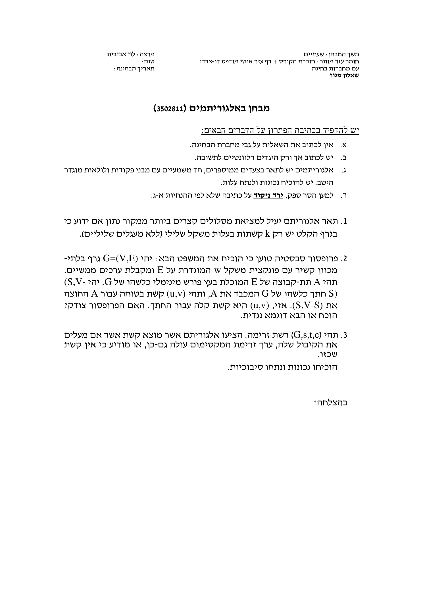
שאלה 1 — מסלולים קצרים עם k קשתות שליליות
תאר אלגוריתם יעיל למציאת מסלולים קצרים ביותר ממקור נתון אם ידוע כי בגרף הקלט יש רק k קשתות בעלות משקל שלילי (ללא מעגלים שליליים).
הרעיון (מבוסס-קורס): Dijkstra יעיל אך פוסל משקלים שליליים; Bellman-Ford מטפל בשליליים אך יקר — Θ(|V|·|E|). כשידוע שרק k קשתות שליליות אפשר לנצל את k הקטן.
צעד 1: נסמן את k הקשתות השליליות. הקדקודים שהן יוצאות מהם / נכנסות אליהם הם "צמתי מפתח".
צעד 2 (רדוקציה טיפוסית): מריצים Dijkstra על תת-הגרף החיובי (מתעלמים מהקשתות השליליות), ואז "מרפים" את k הקשתות השליליות ומריצים שוב, בסבבים — בדומה לרעיון של Bellman-Ford אך עם מספר סבבים כמספר הקשתות השליליות בלבד (O(k) סבבי Dijkstra).
נכונות: כל מסלול קצר ביותר עובר בכל היותר דרך k קשתות שליליות (אין מעגלים שליליים → אין חזרה), ולכן k "שכבות" של הרפיה מספיקות להתכנס לפי תכונת תת-המבנה האופטימלי.
סיבוכיות: O(k·(E+V)log V) — יעיל כאשר k קטן משמעותית מ-|V|.
בסיס: 05-dijkstra + 06-bellman-ford. הפתרון הרשמי אינו בקובץ המבחן.
שאלה 2 — "פרופסור סבסטיה": בטוחה ⇐ קלה?
פרופסור סבסטיה טוען כי הוכיח את המשפט הבא: יהי G=(V,E) גרף בלתי-מכוון קשיר עם פונקצית משקל w המוגדרת על E ומקבלת ערכים ממשיים. תהי A תת-קבוצה של E המוכלת בעץ פורש מינימלי כלשהו של G. יהי (S,V-S) חתך כלשהו של G המכבד את A, ותהי (u,v) קשת בטוחה עבור A החוצה את (S,V-S). אזי, (u,v) היא קשת קלה עבור החתך. האם הפרופסור צודק? הוכח או הבא דוגמא נגדית.
המפתח — זהו היפוך המשפט: משפט החתך שנלמד אומר קשת קלה ⇐ בטוחה (light edge החוצה חתך המכבד את A היא safe edge). כאן טוענים את הכיוון ההפוך: בטוחה ⇐ קלה. יש לבדוק אם ההיפוך תקף.
הבחנה: קשת יכולה להיות בטוחה עבור A (כלומר קיים MST המכיל את A∪{(u,v)}) מבלי להיות הקלה ביותר החוצה את החתך הספציפי הזה — כאשר יש תיקו במשקלים על קשתות החוצות את החתך. במצב תיקו, שתי קשתות חוצות שונות באותו משקל יכולות שתיהן להיות בטוחות, אך רק אחת מהן היא ה"מינימלית" לפי הגדרת קלה יחידה.
מסקנה: הכיוון "בטוחה ⇐ קלה" אינו מובטח באופן כללי — כדאי לחפש דוגמה נגדית עם משקלים שווים על החתך (למשל משולש שכל קשתותיו במשקל זהה, כמו בדוגמאות תרגיל 3 של MST).
בסיס: 04-mst-prim (משפט הקשת הבטוחה). הפתרון הרשמי אינו בקובץ המבחן.
שאלה 3 — קשת שהגדלת קיבולה מגדילה את זרימת המקסימום
תהי (G,s,t,c) רשת זרימה. הציעו אלגוריתם אשר מוצא קשת אשר אם מעלים את הקיבול שלה, ערך זרימת המקסימום עולה גם-כן, או מודיע כי אין קשת שכזו. הוכיחו נכונות ונתחו סיבוכיות.
שים לב: זו בדיוק שאלה 1 מתרגיל הבית של רשתות זרימה (ראה מאגר התרגילים למטה, נושא זרימה), שם מופיע הפתרון הרשמי המלא. תמצית:
לפי משפט זרימה מקסימלית = חתך מינימלי, קשת שהגדלת קיבולה מעלה את הזרימה חייבת להשתייך לכל חתכי המינימום. מריצים Edmonds-Karp, מוצאים חתך מינימלי (BFS ברשת השיורית: S = הנגישים מ-s), ולכל קשת בחתך מגדילים את קיבולה ב-1 ומריצים שוב — אם הזרימה עלתה, זו הקשת המבוקשת; אם אף קשת לא הועילה (יש שני חתכי מינימום זרים) — מודיעים שאין.
סיבוכיות: O(|E|³·|V|) (עד |E| קשתות × הרצת Edmonds-Karp O(|E|²|V|)).
פתרון רשמי מלא: מאגר תרגילי הבית → רשתות זרימה, שאלה 1.
מקור: example-exam-2024.pdf עמ' 1
2. אלגוריתמים אקראיים — Las Vegas מול Monte Carlo
תרגול 13 חוזר על אלגוריתמים אקראיים. ההבחנה הבסיסית שחייבים לזכור למבחן:
-
אלגוריתם לאס וגאס (Las Vegas): אלגוריתם אקראי
המחזיר תמיד תוצאה נכונה (או מודיע על כישלון). הוא אינו מהמר על נכונות התוצאה, אלא
מהמר רק על המשאבים (למשל זמן החישוב).
דוגמה: מיון מהיר אקראי — הציר (pivot) נבחר אקראית; התוצאה תמיד ממוינת, אך זמן הריצה מהיר בהסתברות מסוימת. -
אלגוריתם מונטה קרלו (Monte Carlo): אלגוריתם אקראי
שהתוצאה שלו עלולה להיות שגויה בהסתברות מסוימת, אך זמן הריצה שלו חסום.
דוגמה: אלגוריתם Karger למציאת חתך מינימלי; וכן אלגוריתם Freivalds לאימות כפל מטריצות (תרגיל 2 למטה).
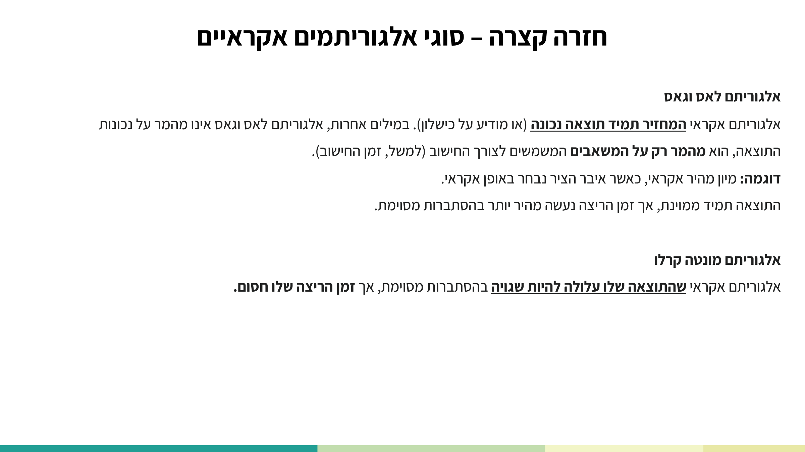
תזכורת הסתברות (חוזרת שוב ושוב בתרגול)
- הסתברות מותנית: P(A|B) = P(A∩B) / P(B). דוגמה: קוביה הוגנת, בהינתן מספר זוגי — P(>4 | זוגי) = (1/6)/(3/6) = 1/3.
- ניסוי ברנולי (Bernoulli trial): ניסוי עם שתי תוצאות — הצלחה או כישלון.
- משתנה מקרי גאומטרי: מספר הניסויים עד ההצלחה הראשונה. תוחלתו 1/P, כאשר P הסתברות ההצלחה.
מקור: tirgul-13-exam-review-2023.pdf עמ' 2, 6–7
3. תרגול 13 — שלושת התרגילים האקראיים (פתורים)
תרגיל 1 — דגימה אחידה מקבוצה בעזרת ביטים אקראיים
נתון מקור של ביטים אקראיים לא מוטים (כלומר p(0) = p(1) = ½). כיצד ניתן להשתמש בהם כדי ליצור דגימה אחידה מהקבוצה S = {0,1,2,…,n-1}? מהי תוחלת מספר הביטים האקראיים הנדרשים לאלגוריתם?
דוגמה: n = 10, log N = 4, N = 16.
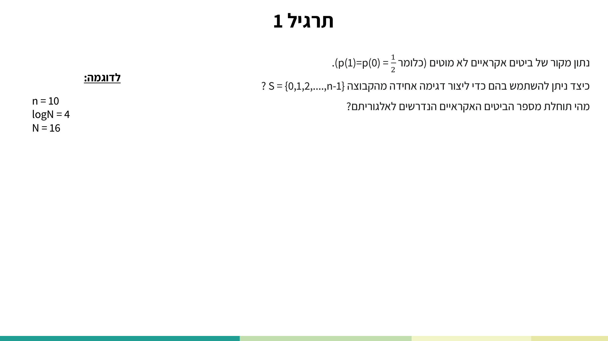
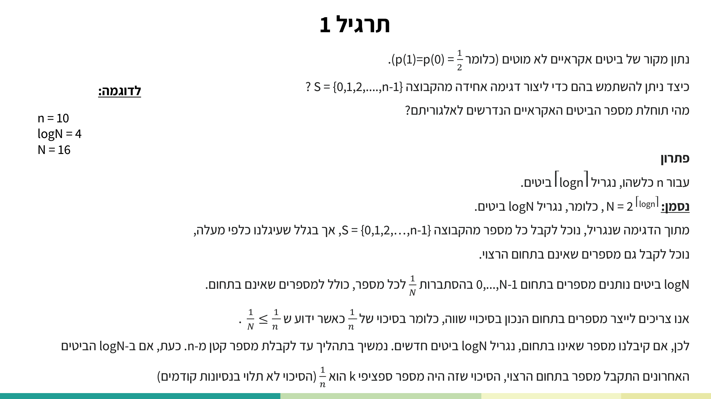
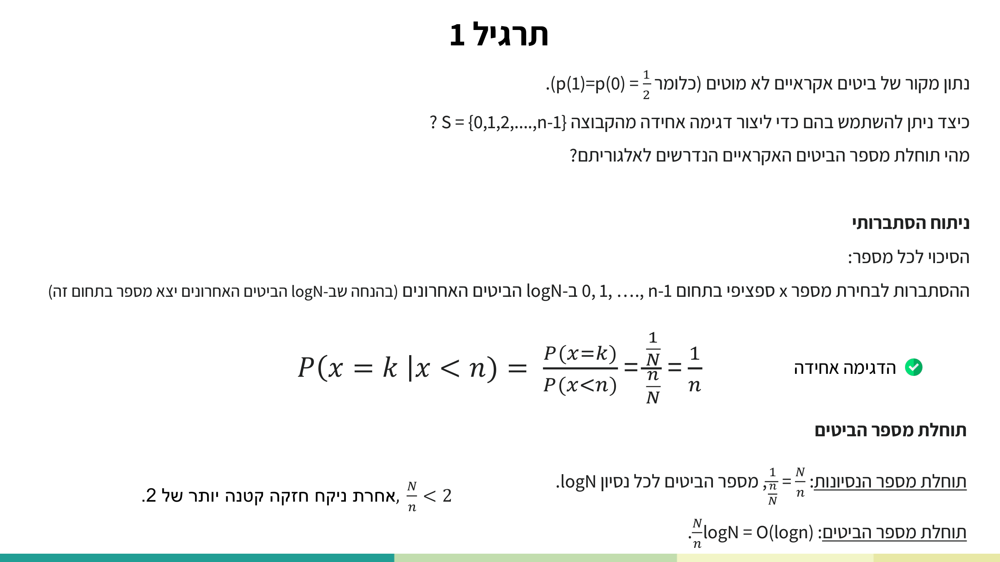
פתרון [עמ' 5] (מילה במילה מהמקור):
עבור n כלשהו, נגריל ⌈log n⌉ ביטים. נסמן: N = 2^⌈log n⌉, כלומר נגריל log N ביטים. מתוך הדגימה נוכל לקבל כל מספר מהקבוצה S = {0,…,n-1}, אך בגלל שעיגלנו כלפי מעלה, נוכל לקבל גם מספרים שאינם בתחום הרצוי. log N ביטים נותנים מספרים בתחום 0,…,N-1 בהסתברות 1/N לכל מספר. אם קיבלנו מספר שאינו בתחום — נגריל log N ביטים חדשים, וכך עד לקבלת מספר קטן מ-n (rejection).
ניתוח הסתברותי [עמ' 7] (מילה במילה מהמקור):
P(x = k | x < n) = P(x=k)/P(x<n) = (1/N)/(n/N) = 1/n — הדגימה אחידה.
תוחלת מספר הביטים [עמ' 7] (מילה במילה מהמקור):
תוחלת מספר הנסיונות: 1/(n/N) = N/n; מספר הביטים לכל נסיון log N. תוחלת מספר הביטים: (N/n)·log N = O(log n) (כי N/n < 2, אחרת ניקח חזקה קטנה יותר של 2).
הסבר מודרך: זהו rejection sampling. מגרילים log N ביטים = מספר אחיד ב-{0,…,N-1}; אם נפל מחוץ ל-{0,…,n-1} — זורקים וחוזרים. מספר הניסיונות עד הצלחה הוא משתנה גאומטרי עם P = n/N, ולכן תוחלת N/n < 2 ניסיונות. כפול log N ביטים ⇒ O(log n).
תרגיל 2 — אימות כפל מטריצות (Freivalds)
נתונות 3 מטריצות A, B, C בגודל n×n. כתבו אלגוריתם אקראי שבודק האם A·B = C.
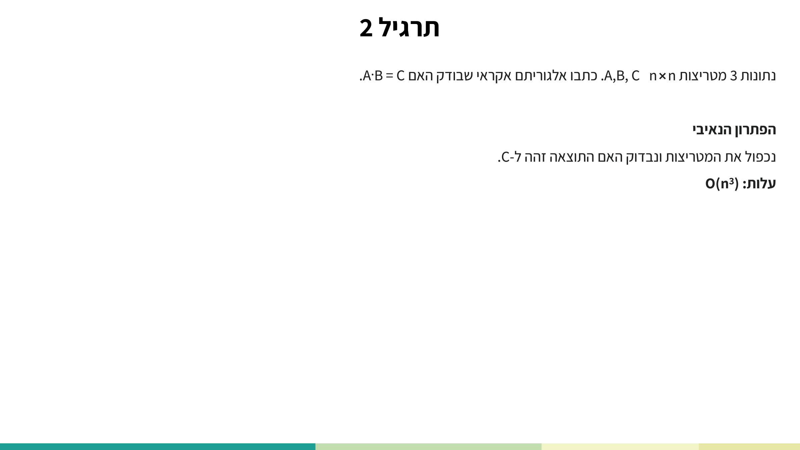
הפתרון הנאיבי: נכפול את המטריצות ונשווה ל-C — עלות O(n³). הרעיון האקראי: נגריל וקטור אקראי v (בוליאני, כי הגרלת ביט עולה O(1)) ונשווה A·(Bv) ל-C·v.
check_multiple_matrix(A,B,C, n): 1. v ← get_random_binary_vector(n) O(n) 2. Bv ← multiple_matrix(B,v) O(n²) 3. ABv ← multiple_matrix(A,Bv) O(n²) 4. Cv ← multiple_matrix(C,v) O(n²) 5. if is_equal(Cv, ABv): O(n) 6. then return "Equal" O(1) 7. else return "Not-Equal" עלות: O(n²)
הסבר שורה-שורה: במקום כפל מטריצה-מטריצה (n³), מבצעים שלושה כפלי מטריצה-וקטור (שורות 2–4), כל אחד O(n²); ההשוואה (שורה 5) O(n). סה"כ O(n²) — שיפור דרמטי על O(n³).
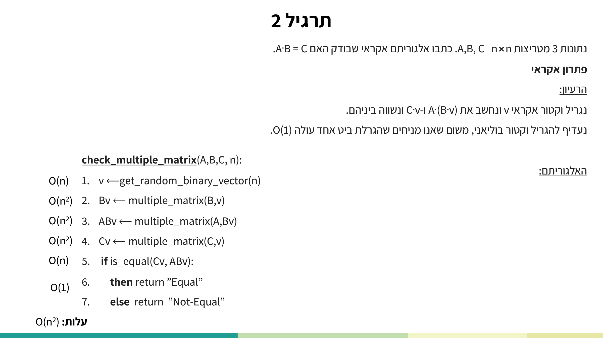
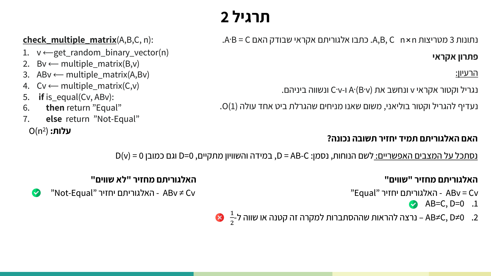
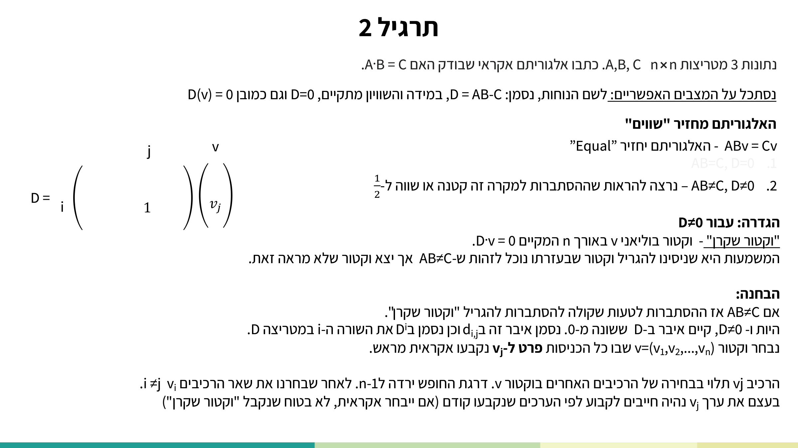
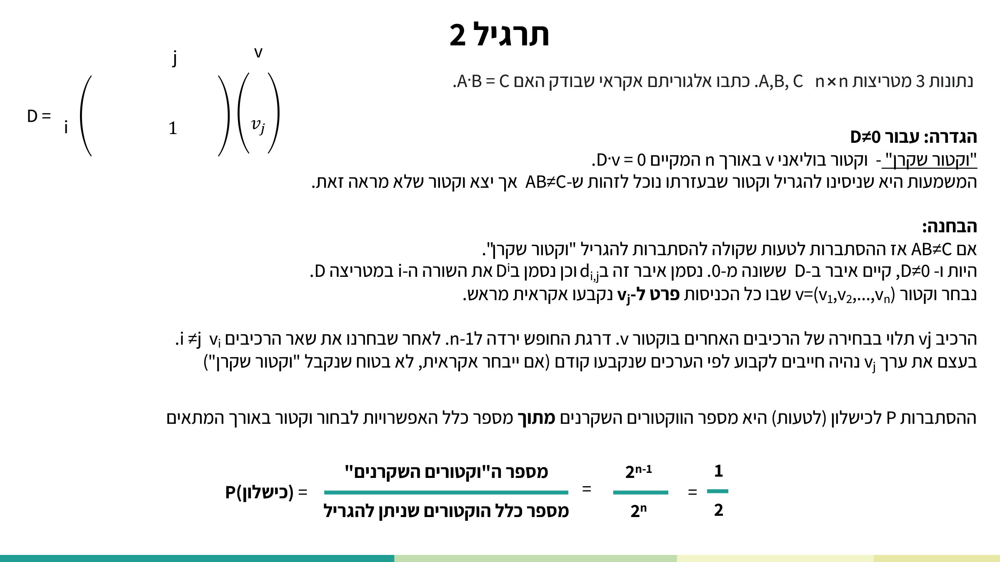
סיווג המצבים [עמ' 13] (מילה במילה מהמקור): נסמן D = AB-C.
- מחזיר "שווים" (ABv = Cv): אם AB=C (D=0) ✓ נכון; אם AB≠C (D≠0) ✗ טעות — נראה שהסתברותה ≤ ½.
- מחזיר "לא שווים" (ABv ≠ Cv): ✓ תמיד נכון (אם ABv≠Cv בהכרח AB≠C).
הגדרה — "וקטור שקרן" (lying vector) [עמ' 15–16]: עבור D≠0, וקטור בוליאני v המקיים D·v = 0 — מטעה אותנו לחשוב ש-AB=C.
חישוב הסתברות הכישלון [עמ' 19–20] (מילה במילה מהמקור):
P(כישלון) = (מספר הווקטורים השקרנים)/(מספר כלל הווקטורים) = 2^{n-1} / 2^n = 1/2.
הסבר מודרך: אם D≠0 יש בו איבר d_{i,j}≠0. בוחרים את כל רכיבי v פרט ל-v_j חופשית; אז v_j נכבל לערך יחיד שהופך את השורה ל-0. לכן יש לכל היותר 2^{n-1} וקטורים שקרנים מתוך 2^n ⇒ הסתברות שגיאה ≤ ½.
הגברת ההסתברות (amplification) וסיווג
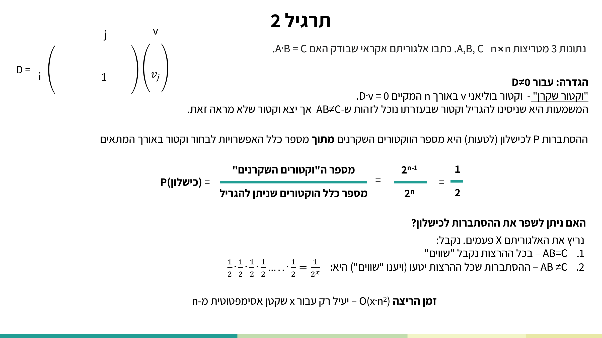
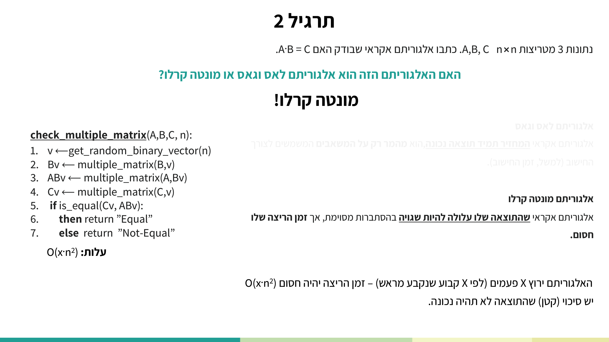
הגברה [עמ' 22] (מילה במילה מהמקור):
נריץ את האלגוריתם X פעמים. אם AB=C — בכל ההרצות נקבל "שווים". אם AB≠C — ההסתברות שכל ההרצות יטעו היא ½·½·…·½ = 1/2^x. זמן הריצה O(x·n²) — יעיל רק עבור x שקטן אסימפטוטית מ-n.
סיווג [עמ' 23–24]: האלגוריתם הוא מונטה קרלו — זמן ריצה חסום (O(x·n²)) + סיכוי (קטן) לטעות.
תרגיל 3 — בניית מטבע הוגן ממטבע מוטה (create_fair_coin)
נתון מטבע בעל הסתברות P ל"פלי", כאשר P לא ידועה. הראו כיצד ליצור מטבע לא מוטה שבו P(פלי) = P(עץ) = ½. תנו סכימה שבה תוחלת מספר ההטלות של המטבע הנתון כדי לקבל הטלה אחת של המטבע הלא-מוטה הינה לא יותר מאשר 1/(P(1-P)). רמז: התבוננו בשתי הטלות רצופות של המטבע הנתון.
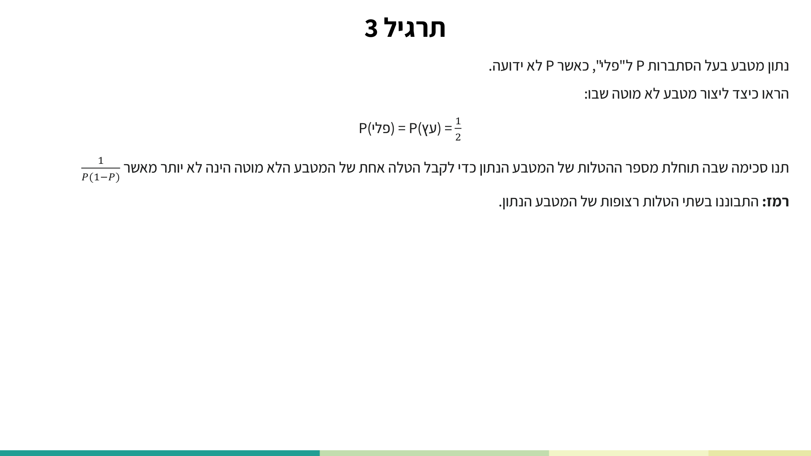
create_fair_coin(coin) 1. prev_flip ← flip(coin) 2. current_flip ← flip(coin) 3. while prev_flip = current_flip: 4. do prev_flip ← flip(coin) 5. current_flip ← flip(coin) 6. return current_flip
הסבר: מטילים זוג-זוג. כל עוד שתי ההטלות זהות (0,0 או 1,1) — זורקים וממשיכים; ברגע שיצאו שתי תוצאות שונות מחזירים את current_flip (מגדירים "פלי" = 1).
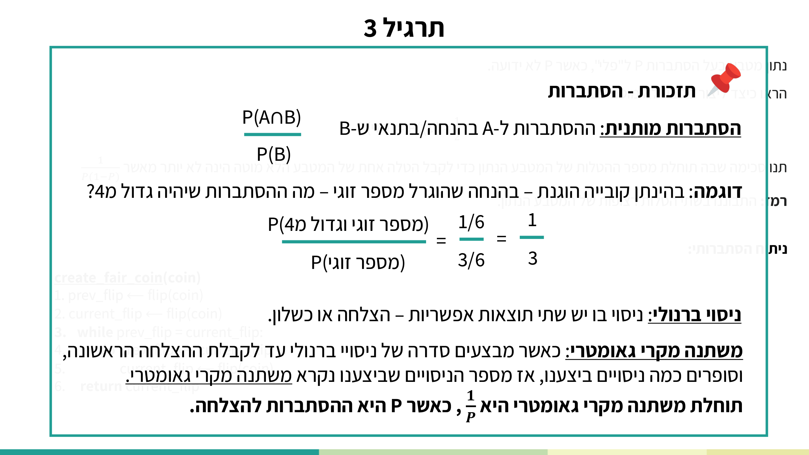
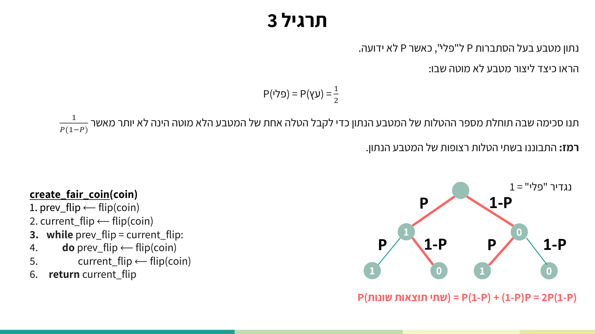
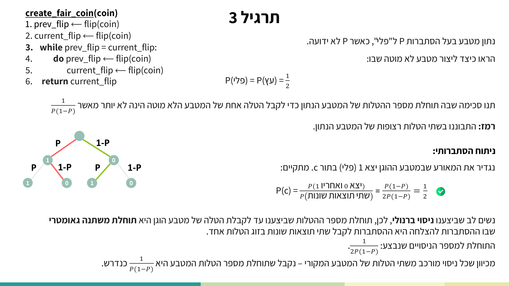
ניתוח [עמ' 27–30] (מילה במילה מהמקור):
הזוגות (1,0) ו-(0,1) הם היחידים ה"שונים". P(שתי תוצאות שונות) = P(1-P) + (1-P)P = 2P(1-P). נגדיר c = יצא 1 (פלי) במטבע ההוגן: P(c) = P(1 ואחריו 0)/P(שתי תוצאות שונות) = P(1-P)/2P(1-P) = ½ ✓
תוחלת מספר ההטלות [עמ' 31] (מילה במילה מהמקור):
ביצענו ניסוי ברנולי; תוחלת מספר הזוגות עד הצלחה היא תוחלת משתנה גאומטרי עם הסתברות 2P(1-P), כלומר 1/(2P(1-P)). כל ניסוי = שתי הטלות ⇒ תוחלת מספר ההטלות היא 1/(P(1-P)) כנדרש.
הסבר מודרך (טריק von Neumann): ההטיה P מבטלת את עצמה כי P(1,0) = P(1-P) = P(0,1) — שני הזוגות ה"שונים" שווי-הסתברות בדיוק, ולכן המטבע החדש הוגן ללא תלות ב-P.
מקור: tirgul-13-exam-review-2023.pdf עמ' 3–31
4. סקירת נושאים למבחן — סיכום הסמסטר
שני שקפי הסיכום של המרצה ממפים את כל נושאי הקורס. השתמש בהם כרשימת ביקורת (checklist).
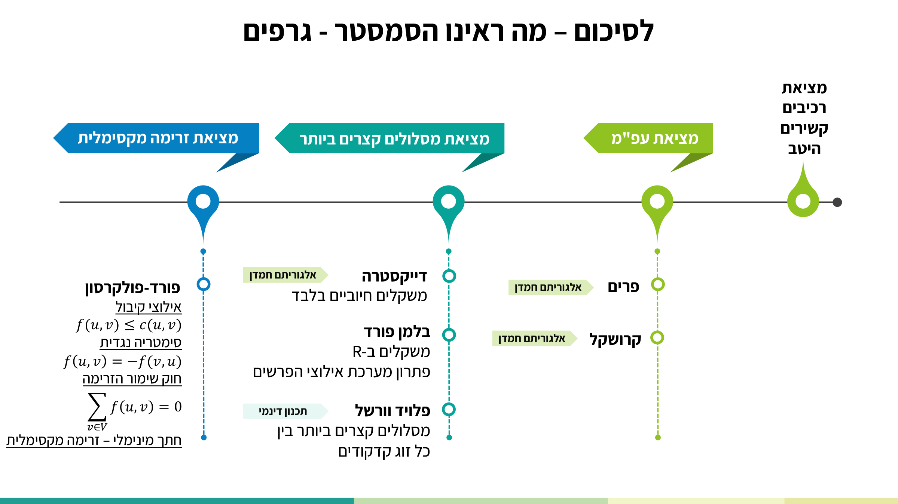
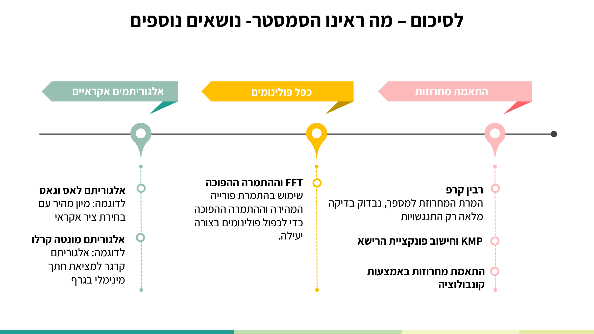
ציר הזמן — גרפים [עמ' 32]
- רכיבים קשירים היטב (strongly connected components).
- עץ פורש מינימלי: פרים (חמדן), קרושקל (חמדן).
- מסלולים קצרים ביותר: דייקסטרה (חמדן, משקלים חיוביים); בלמן פורד (משקלים ב-ℝ, אילוצי הפרשים); פלויד וורשל (תכנון דינמי, כל זוג).
- זרימה מקסימלית: פורד-פולקרסון — עם אילוצי קיבול, סימטריה נגדית, שימור זרימה, ו-חתך מינימלי = זרימה מקסימלית.
נושאים נוספים [עמ' 33]
- אלגוריתמים אקראיים: Las Vegas (מיון מהיר אקראי); Monte Carlo (Karger).
- כפל פולינומים: FFT וההתמרה ההפוכה.
- התאמת מחרוזות: רבין קרפ, KMP (פונקציית הרישא), והתאמה באמצעות קונבולוציה.
מקור: tirgul-13-exam-review-2023.pdf עמ' 32–33
5. טבלת סיבוכיות מסכמת — כל האלגוריתמים בקורס
טבלה זו מרכזת את הסיבוכיות של כל אלגוריתם שנלמד (כל הערכים מהאשכולות המתאימים). מתחתיה — כרטיסיות flashcards לבדיקה עצמית: הפוך כרטיס לגלות את הסיבוכיות והרעיון.
| אלגוריתם | בעיה | סיבוכיות זמן | הערה |
|---|---|---|---|
| BFS / DFS | סריקת גרף | Θ(|V|+|E|) | בסיס לזיהוי מעגל/קשירות |
| SCC (Kosaraju) | רכיבים קשירים היטב | Θ(|V|+|E|) | שני מעברי DFS + Gᵀ |
| Prim | MST | Θ(|E| log|V|) | ערימה בינרית; צוואר = תור עדיפויות |
| Kruskal | MST | Θ(|E| log|V|) | עם counting sort → Θ(|E|·α) |
| Union-Find | קבוצות זרות | ~O(α(m,n)) | אמורטייזד לפעולה (rank + path compression) |
| Dijkstra | SSSP (משקל ≥ 0) | O(V²) / O((E+V)log V) | מערך ליניארי / ערימה בינרית |
| Bellman-Ford | SSSP (משקל ב-ℝ) | Θ(|V|·|E|) | מזהה מעגל שלילי בסבב V |
| Floyd-Warshall | APSP | Θ(|V|³) | תכנון דינמי; d_{i,i}<0 ⇒ מעגל שלילי |
| Ford-Fulkerson | זרימה מקסימלית | O(|E|·f*) | קיבולים שלמים |
| Edmonds-Karp | זרימה מקסימלית | O(|V|·|E|²) | BFS למסלול שיפור קצר |
| נאיבי (מחרוזות) | התאמת מחרוזות | O(n·m) | בדיקת כל היסט |
| Rabin-Karp | התאמת מחרוזות | O(n+m) טיפוסי | hash מתגלגל; אימות רק בהתנגשות |
| KMP | התאמת מחרוזות | Θ(n+m) | π ב-Θ(m); הטקסט לא חוזר אחורה |
| התאמה בקונבולוציה | התאמת מחרוזות | O(n log n) → O(n log m) | שיפור ע"י חלוקה לחלקים בגודל 2m |
| FFT | כפל פולינומים | Θ(n log n) | הפרד ומשול על שורשי היחידה |
| Randomized QuickSort | מיון | O(n log n) בתוחלת | Las Vegas |
| Freivalds | אימות AB=C | O(n²) (הרצה) / O(x·n²) | Monte Carlo; שגיאה ≤ 1/2^x |
| Karger | חתך מינימלי | O(n²) להרצה | Monte Carlo; כיווץ קשתות |
| Counting sort | מיון שלמים [1..k] | Θ(n+k) | משפר את מיון Kruskal |
מקור: כל אשכולות הקורס (01–13)
6. מאגר כל תרגילי הבית + פתרונות רשמיים
6.1 חזרה על גרפים (BFS / DFS / טרנספוז)
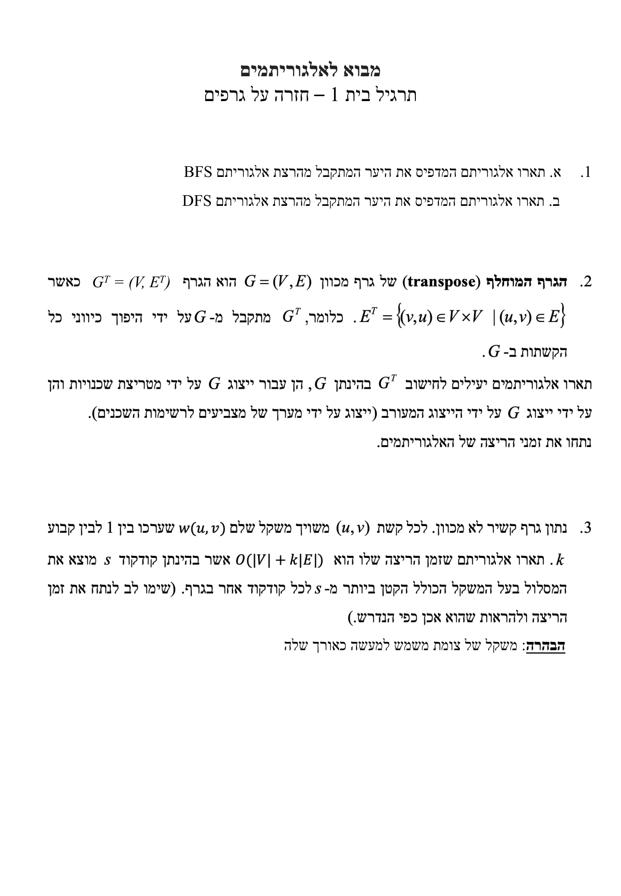
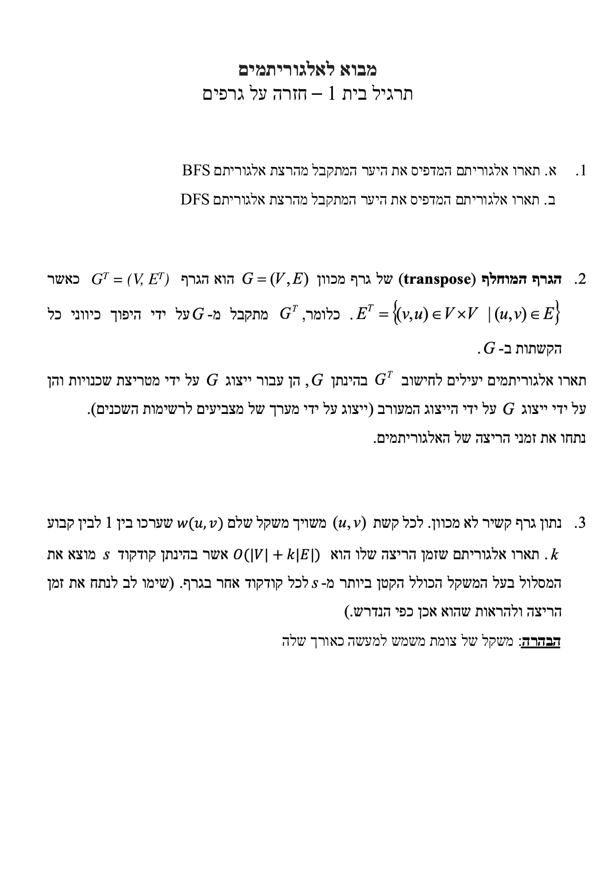
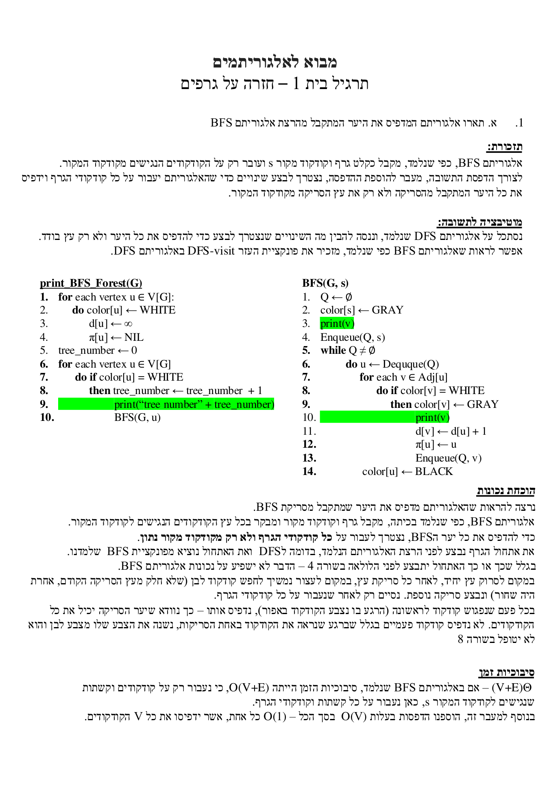
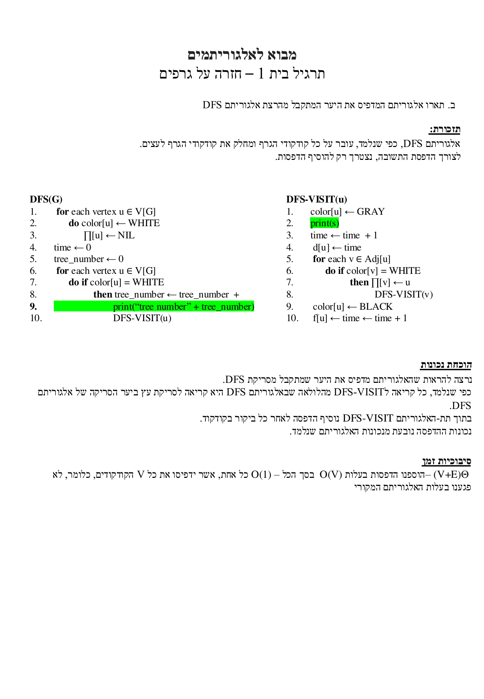

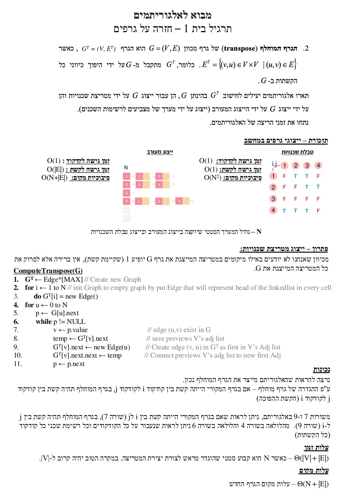
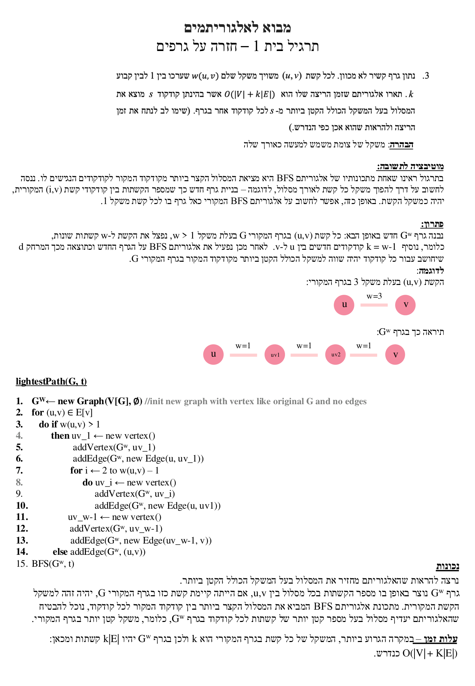
תרגיל כיתה — זיהוי מעגל בגרף מכוון
נתון G גרף מכוון, הציעו אלגוריתם הבודק האם קיים בגרף G מעגל — אם כן מחזיר True, אחרת False.
DFS-VISIT-New(u) 1. color[u] ← GRAY 2. time ← time + 1 3. d[u] ← time 4. for each v ∈ Adj[u] 5. do if color[v] = WHITE 6. then ∏[v] ← u 7. DFS-VISIT(v) 8. else if color[v] = GREY: 9. then hasCircle ← True 10. color[u] ← BLACK 11. f[u] ← time ← time + 1
נכונות (מילה במילה, מקוצר): האלגוריתם מחזיר True אם"ם קיים מעגל. אם נמצא שכן v אפור — זו קשת אחורה ⇒ מעגל v→u↝v. ולהיפך, אם קיים מעגל, בעת הסריקה כבר נבקר הקדקוד הראשון (אפור) והתנאי יתקיים.
הסבר מודרך: DFS רגיל + דגל hasCircle; המפתח הוא שקשת לצומת אפור (בתוך רקורסיה פעילה) מעידה על מעגל.
שאלה 2 (hw-1) — הגרף המשוחלף (transpose)
הגרף המשוחלף של G=(V,E) הוא Gᵀ=(V, Eᵀ) כאשר Eᵀ = {(v,u) | (u,v) ∈ E}. תארו אלגוריתמים יעילים לחישוב Gᵀ הן עבור מטריצת שכנויות והן עבור ייצוג מעורב (מערך רשימות). נתחו זמני ריצה.
מטריצת שכנויות (מילה במילה מהמקור):
ComputeTranspose(G) // מטריצה 1. Gᵀ ← int[MAX][MAX] 2. for i ← 1 to N 3. do for j ← 1 to N 4. do Gᵀ[i,j] = 0 5. for i ← 1 to N 6. do for j ← 1 to N 7. do if G[i,j] = 1 8. then Gᵀ[j,i] = 1
עלות זמן ומקום: Θ(N²).
ייצוג מעורב / רשימות שכנויות (מילה במילה מהמקור):
ComputeTranspose(G) // רשימות 1. Gᵀ ← Edge*[MAX] 2. for i ← 1 to N 3. do Gᵀ[i] = new Edge() 4. for u ← 0 to N 5. p ← G[u].next 6. while p != NULL 7. v ← p.value 8. temp ← Gᵀ[v].next 9. Gᵀ[v].next ← new Edge(u) 10. Gᵀ[v].next.next ← temp 11. p ← p.next
עלות זמן Θ(|V|+|E|), מקום Θ(N+|E|).
הסבר מודרך: לכל קשת (u,v) ב-G יוצרים (v,u) ב-Gᵀ. בייצוג רשימות עוברים על כל הקשתות פעם אחת (O(|V|+|E|)), במטריצה חייבים לסרוק N² תאים. Gᵀ הוא צעד מרכזי ב-SCC.
שאלה 3 (hw-1) — מסלול קל ביותר עם משקלי קשתות שלמים
נתון גרף קשיר לא מכוון. לכל קשת משקל שלם בין 1 לקבוע. תארו אלגוריתם בזמן O(|V| + k|E|) אשר בהינתן s מוצא את המסלול בעל המשקל הכולל הקטן ביותר מ-s לכל קדקוד.
רעיון (מילה במילה מהמקור): בונים Gʷ: כל קשת במשקל w>1 מפוצלת ל-w קשתות (k=w−1 קדקודי ביניים חדשים) כולן במשקל 1, ואז מריצים BFS.
עלות: במקרה הגרוע כל קשת במשקל k ⇒ k|E| קשתות ב-Gʷ ⇒ O(|V| + k|E|).
הסבר מודרך: הופכים משקלים למספר קשתות, כי BFS סופר קשתות. d שמחושב ב-BFS על Gʷ שווה למשקל המינימלי בגרף המקורי.
6.2 רכיבים קשירים היטב (SCC)
⬇️ exercise-scc.pdf · ⬇️ sol-exercise-scc.pdf
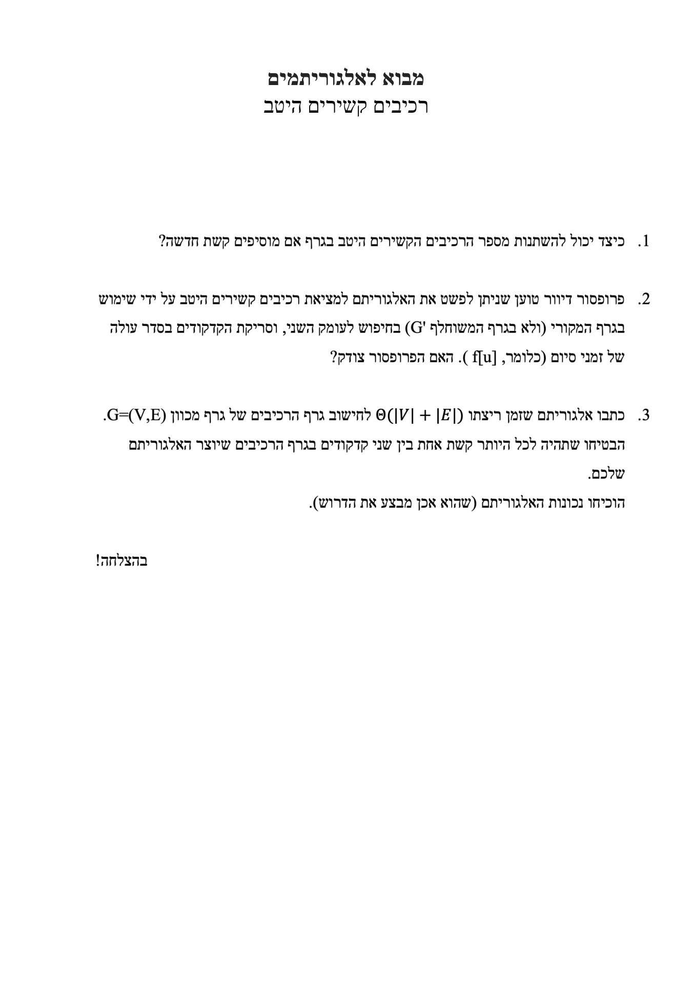

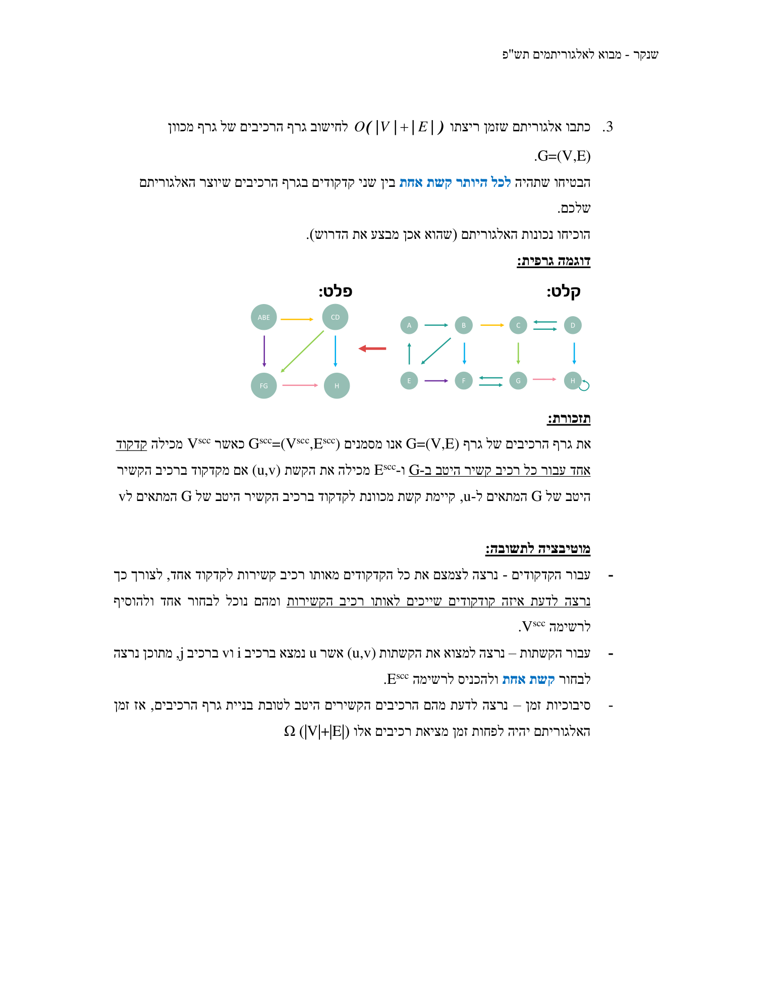

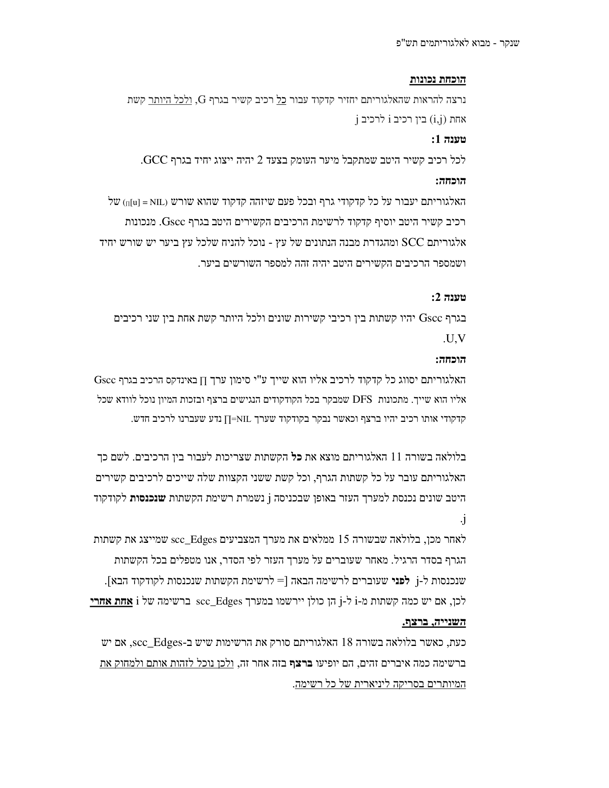
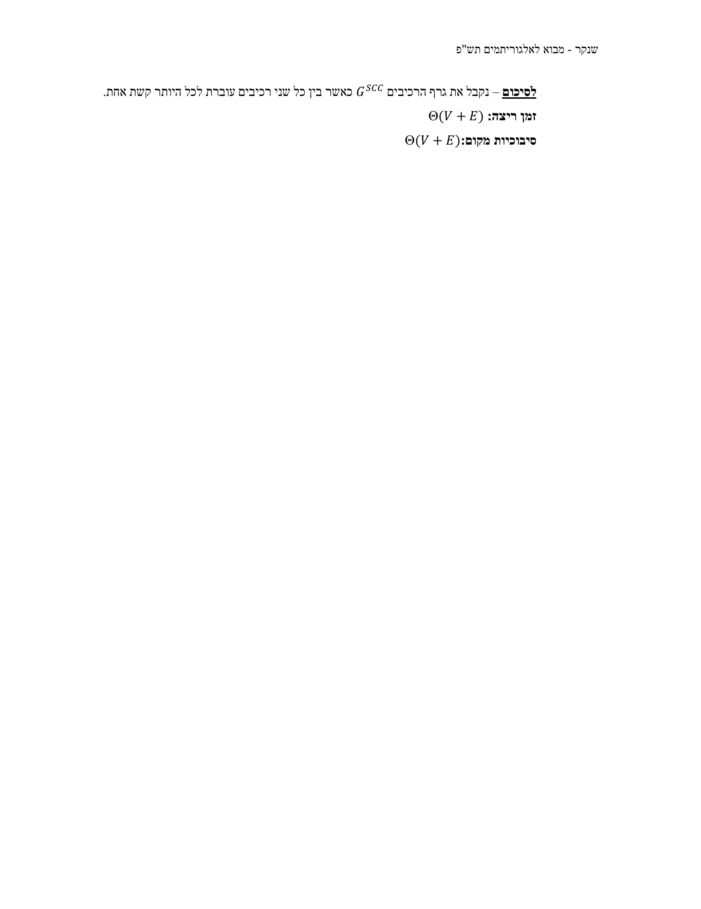
שאלה 1 — כיצד משתנה מספר ה-SCC בהוספת קשת?
כיצד יכול להשתנות מספר הרכיבים הקשירים היטב בגרף אם מוסיפים קשת חדשה?
הוספת קשת יכולה להקטין את מספר ה-SCC בכל k, 1 ≤ k ≤ n−1: אם יש k+1 קדקודים על מסלול פשוט, קשת אחת שסוגרת מעגל מאחדת אותם לרכיב אחד (מ-k+1 ל-1). היא יכולה גם שלא לשנות (קשת בתוך אותו רכיב). היא לא יכולה להגדיל את מספר הרכיבים.
הסבר מודרך: כל קדקודי מעגל שייכים לאותו SCC; קשת רק "מדביקה" רכיבים, לעולם לא מפרקת.
שאלה 2 — טענת פרופסור דיוור (DFS שני על G המקורי)
פרופסור דיוור טוען שניתן לפשט את אלגוריתם ה-SCC ע"י שימוש בגרף המקורי (ולא Gᵀ) ב-DFS השני, בסדר עולה של זמני סיום f[u]. האם צודק?
הפרופסור טועה. דוגמה נגדית: DFS ראשון נותן B 2/3, C 4/5, A 1/6; DFS שני (בסדר f עולה, מתחיל מ-B) מחבר את כל הקדקודים לרכיב אחד — שגוי (C אינו שייך).
הסבר מודרך: הנכונות של Kosaraju תלויה בשילוב Gᵀ + סדר f יורד. שינוי אחד מהם שובר את המבנה.
תרגיל כיתה — G^scc הוא DAG
הוכיחו כי G^scc הוא גרף מכוון ללא מעגלים (DAG).
בשלילה: אם ב-G^scc יש מעגל בין רכיבים X,Y, אז X⤳Y וגם Y⤳X ב-G ⇒ כל הקדקודים ב-X,Y באותו רכיב קשירות — בסתירה להיותם רכיבים שונים. מ.ש.ל.
קישור: hw-1.pdf (שאלת טרנספוז 6.1 רלוונטית גם ל-SCC).
6.3 עצים פורשים מינימליים (MST) — משפט הקשת הבטוחה, Prim, Kruskal
⬇️ hw-mst.pdf · ⬇️ sol-hw-mst.pdf · ⬇️ hw-mst-prim-kruskal.pdf · ⬇️ sol-hw-mst-prim-kruskal.pdf


hw-mst שאלה 1 — משקל מינימלי ⇒ עץ
הראו שאם כל משקלי הקשתות חיוביים, אזי כל תת-קבוצה המחברת את כל הקדקודים במשקל כולל מינימלי היא בהכרח עץ. מצאו דוגמה שבה המסקנה אינה נובעת אם מותרים משקלים אי-חיוביים.
בשלילה, נניח שתת-קבוצה מינימלית D אינה עץ ⇒ יש בה מעגל. נוציא קשת e=(u,v) מהמעגל: D'=D\{e} עדיין מחברת את כל הקדקודים (יש דרך אחרת מ-v ל-u), אך w(D') = w(D) − w(e) < w(D) (כי w(e)>0) — בסתירה למינימליות. אם מותרים משקלים אי-חיוביים, ייתכן w(e) ≤ 0 ואז אין סתירה. דוגמה: משולש שכל צלעותיו במשקל −1.
hw-mst שאלה 2 — הוספת קשת ומשקל ה-MST
T₁ עפ"מ של G במשקל W₁. מוסיפים קשת e; T₂ עפ"מ חדש במשקל W₂. א. הוכיחו/הפריכו W₂ ≤ W₁. ב. אם W₂ = W₁ אז e על מעגל שכל קשתותיו במשקל ≤ w(e).
א (מילה במילה מהמקור): T₁ נשאר עץ פורש גם אחרי הוספת e, ו-T₂ מינימלי ⇒ W₂ ≤ W₁.
ב (מילה במילה, מקוצר): אם e∉T₂ — היא סוגרת מעגל דרך T₂; אם e∈T₂ — היא לא ב-T₁ ויוצרת מעגל עם המסלול ב-T₁. בשני המקרים, בשלילה, אילו הייתה במעגל קשת e₂ כבדה מ-e, אפשר היה להחליף ולהקטין את משקל העץ — בסתירה למינימליות. מ.ש.ל.
prim-kruskal שאלה 1 — הוכיחו/הפריכו
א) Prim ו-Kruskal תמיד נותנים את אותו עפ"מ? ב) Prim מ-r נותן עץ מסלולים קצרים ביותר? ג) כמו ב', אך עבור w:E→ℝ ללא מעגלים שליליים?
א. לא נכון. דוגמה עם תיקו במשקלים: שני עצים באותו משקל אך שונים (Prim בוחר קשת אחת, Kruskal אחרת).
ב. לא נכון. משולש A-B=2, B-C=2, A-C=3: עפ"מ Prim = A-B, B-C, אך המסלול הקצר A→C הישיר (3) קצר מ-A→B→C (4), והקשת A-C אינה בעץ.
ג. לא נכון. אותה דוגמה (ℝ⁺⊂ℝ).
הסבר מודרך: עפ"מ ממזער משקל כולל, לא מרחקים ממקור — לכן אינו בהכרח עץ מסלולים קצרים.
prim-kruskal שאלה 2 — האם קשת e ב-MST
א) קבע אם קיים עפ"מ המכיל את e. ב) קבע אם כל עפ"מ מכיל את e.
א (מילה במילה מהמקור): מגדירים w'(e) = w(e) − 0.1 (מקטינים את e), מריצים Prim מ-u, ובודקים אם π[v]=u.
is_e_in_some_MST(G, w, (u,v)): 4. do if x=u and y=v: 5. then w'(x,y) ← w(u, v) − 0.1 6. else w'(x,y) ← w(x, y) 7. MST-Prim(G, w', u) 8. if π[v] = u: return true else return false
ב (מילה במילה מהמקור): להיפך — w'(e) = w(e) + 0.1 (מגדילים את e); אם עדיין π[v]=u, אז e הכרחית לכל עפ"מ.
הסבר מודרך: המשקלים שלמים, ולכן שינוי ±0.1 (<1) רק שובר תיקו — לטובת e (מקטינים) או נגדה (מגדילים) — בלי לשנות אי-שוויונים חזקים.
תרגיל כיתה — עפ"מ "אדום ביותר"
כל קשת צבועה אדום/שחור. הציעו אלגוריתם שמוצא עפ"מ עם מקסימום קשתות אדומות.
רעיון (מילה במילה מהמקור): w'(e) = w(e) − 0.1 אם אדומה, אחרת w(e); מריצים Prim על w'. עלות Θ(|E| log|V|).
נכונות מודרכת: ε=0.1<1 והמשקלים שלמים ⇒ החיסור רק שובר תיקו לטובת אדום, לעולם לא הופך אי-שוויון בין משקלים שלמים שונים. העץ נשאר עפ"מ, ומבין העצים המינימליים — בעל מקסימום קשתות אדומות.
6.4 Dijkstra — מסלולים קצרים ממקור
⬇️ hw-dijkstra.pdf · ⬇️ sol-hw-dijkstra.pdf
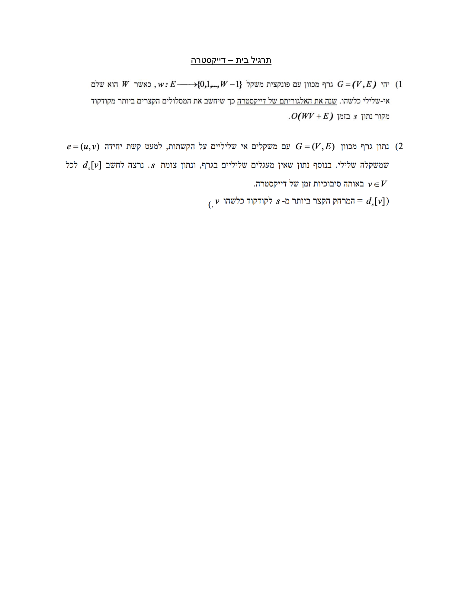
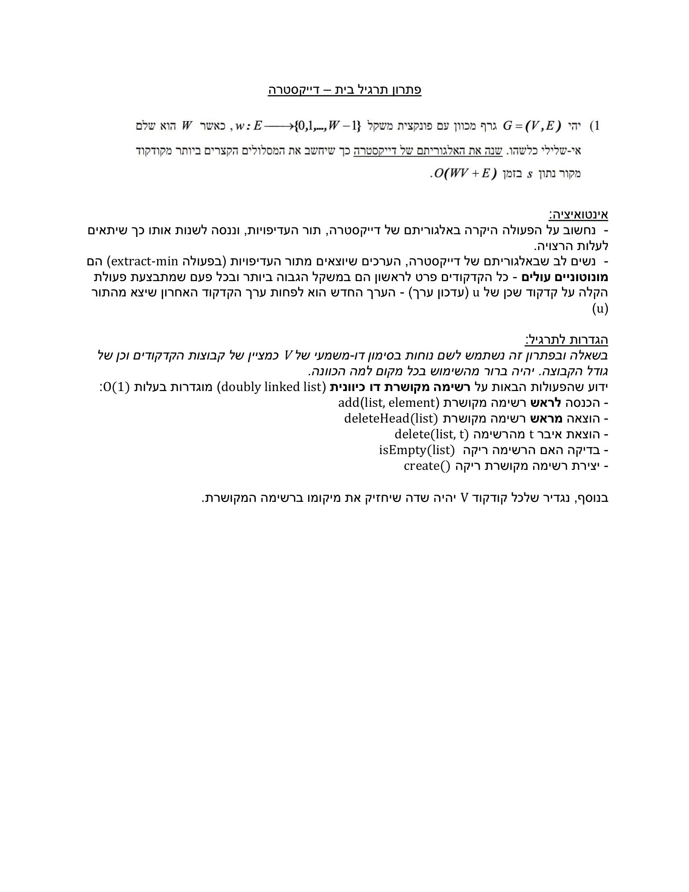
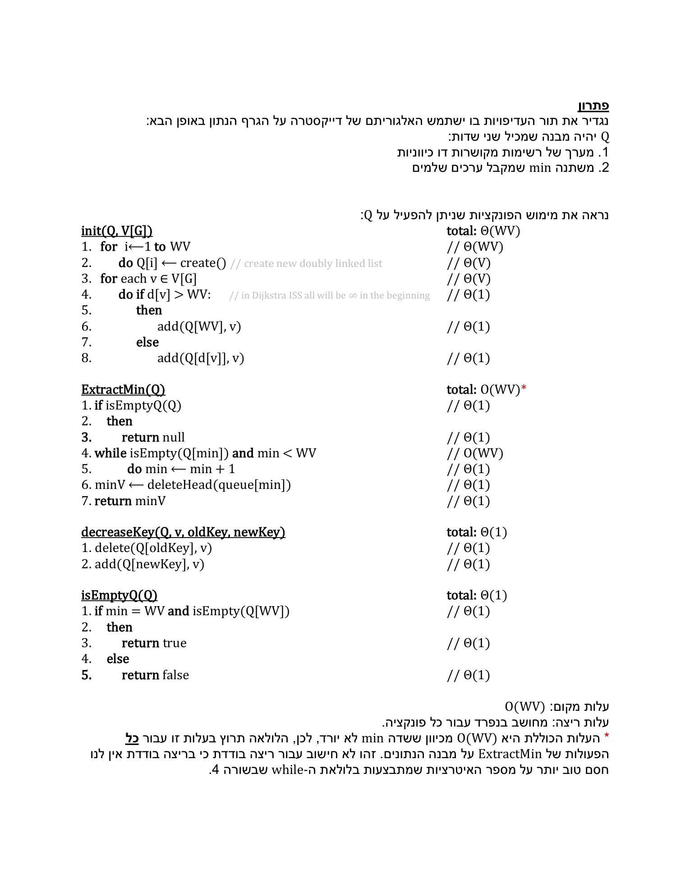
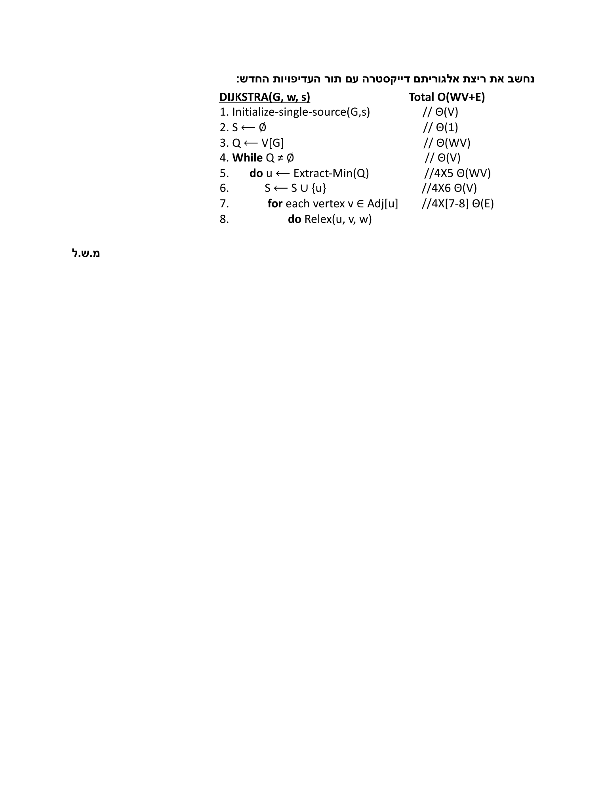
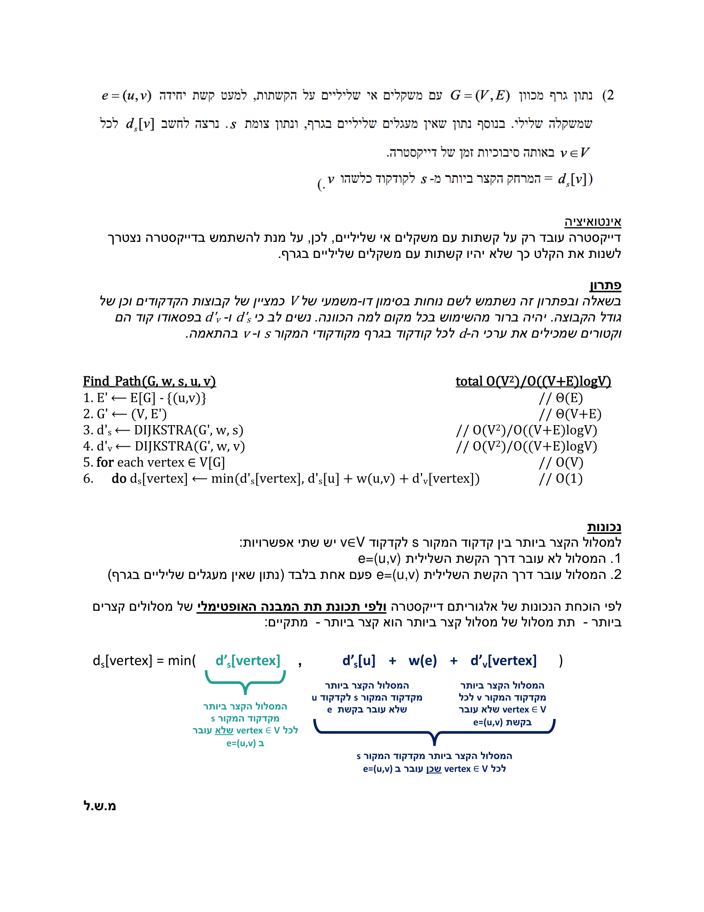
hw שאלה 1 — Dijkstra ב-O(WV + E)
w: E → {0,1,…,W−1}. שנה את Dijkstra כך שיחשב מסלולים קצרים מ-s בזמן O(WV + E).
רעיון (מילה במילה מהמקור): מחליפים ערימה ב-bucket queue — מערך של WV רשימות מקושרות דו-כיווניות (מפתחות שלמים ב-[0, WV)). ה-min מונוטוני עולה ולא יורד.
ExtractMin(Q) 4. while isEmpty(Q[min]) and min < WV 5. do min ← min + 1 6. minV ← deleteHead(queue[min]) decreaseKey(Q, v, oldKey, newKey) 1. delete(Q[oldKey], v); 2. add(Q[newKey], v) // Θ(1)
עלות: אתחול Θ(WV); סך קריאות Extract-Min Θ(WV) (min לא יורד); relaxations Θ(E) (decreaseKey ב-O(1)) ⇒ O(WV + E).
הסבר מודרך: כשהמפתחות שלמים וחסומים, אין צורך ב-log של ערימה; "דלי" לכל ערך מרחק אפשרי, וה-min רק מתקדם.
hw שאלה 2 — קשת שלילית יחידה
גרף עם משקלים אי-שליליים, פרט לקשת יחידה e=(u,v) שלילית (ללא מעגלים שליליים). חשבו d_s[v] בסיבוכיות Dijkstra.
Find_Path(G, w, s, u, v)
1. E' ← E[G] - {(u,v)}
2. G' ← (V, E')
3. d'_s ← DIJKSTRA(G', w, s)
4. d'_v ← DIJKSTRA(G', w, v)
6. d_s[x] ← min(d'_s[x], d'_s[u] + w(u,v) + d'_v[x])
נכונות (מילה במילה מהמקור): מסלול קצר ל-x או שאינו עובר ב-e (d'_s[x]), או עובר בה פעם אחת בדיוק (d'_s[u]+w(e)+d'_v[x]). לפי תכונת תת-המבנה האופטימלי — לוקחים מינימום.
הסבר מודרך: מסירים את הקשת השלילית, מריצים Dijkstra פעמיים (מ-s ומ-v), ומחברים דרך e ידנית.
תרגילי כיתה נבחרים (Dijkstra)
תרגיל: מסלול מ-s ל-t העובר דרך צומת אחד לפחות מ-U. משכפלים את הגרף (בלי t), מוסיפים קשתות מעבר במשקל 0 מכל צומת בעותק ל-v∈U בגרף המקורי, ומריצים Dijkstra מ-s'. כל מסלול ל-t "קופץ" לגרף המקורי דרך צומת מ-U. עלות: O(V²)/O((E+V)log V).
תרגיל: השפעת שינוי משקל. א) C(e)=W(e)+r — נפריך (הוספת קבוע מענישה מסלולים ארוכים; דוגמה: S→a→b→t=3 הופך יקר מ-S→t=4). ב) C(e)=W(e)·r, r>0 — נוכיח: C(p)=r·W(p) לכל מסלול, היחס נשמר.
6.5 Bellman-Ford ואילוצי הפרשים
⬇️ hw-bellman-ford.pdf · ⬇️ sol-hw-bellman-ford.pdf


שאלה 1 — משקל מסלול קצר ב-v₀ יכול להיות חיובי?
האם משקל מסלול קצר ביותר מהקדקוד החדש v₀ לקדקוד כלשהו בגרף אילוצים יכול להיות חיובי? הסבירו.
לא. v₀ מחובר בקשתות משקל 0 לכל הקדקודים; מסלול אחר קצר יותר מחייב הקלה ⇒ ערך שלילי. לכן המרחקים תמיד ≤ 0.
שאלה 2 — סימון −∞ לקדקודים במעגל שלילי
שנו את Bellman-Ford כך שיציב −∞ ב-d[v] לכל v שקיים עבורו מעגל שלילי על מסלול מהמקור אליו.
bellman_ford_mark_negative_weight(G, w, s) 3. for i←1 to |V|-1 4. do for each edge (u,v): Relax(u,v,w) 6. for each edge (u,v) 7. do if d[v] > d[u] + w(u,v) // מעגל שלילי 8. then DFS-Visit(v) // סמן נגישים 10. mark_negative_cycles() // d[v]←-∞ לצבועים שחור
נכונות (מילה במילה, מקוצר): Bellman-Ford מזהה מעגל שלילי בסבב ה-V; DFS-Visit מסמן את כל הנגישים מהמעגל; מציבים −∞ רק לצבועים שחור. עלות O(VE).
שאלה 3 — המסלול האמין ביותר
לכל קשת r(u,v)∈[0,1] (אמינות, בלתי-תלויה). אמינות מסלול r(P)=∏ r(e). מצאו את המסלול האמין ביותר.
רעיון (מילה במילה מהמקור): משנים את Dijkstra למקסימום: d[s]=1, d[v]=−∞, Relax': if d[v] < d[u]·r(u,v) then d[v]←d[u]·r(u,v), ו-Extract-Max.
נכונות מודרכת: תת-מבנה אופטימלי של אמינות: δ(s,v)=δ(s,u)·r(u,v) (הוכחת חיתוך-והדבקה). עלות O(V²).
תרגילי כיתה — ארביטראז' ואילוצי הפרשים
ארביטראז': קדקוד לכל מטבע, קשת (i,j) במשקל −log A[i,j]. סדרת החלפות רווחית ⇔ מעגל שלילי. מריצים Bellman-Ford: אם מצא מעגל שלילי — יש ארביטראז'. עלות O(V³) (גרף מלא).
אילוצי הפרשים: מסדרים כל אילוץ לצורה X_j − X_i ≤ b (מכפילים ב-−1 / מחלקים / שוויון = שני אי-שוויונים), בונים גרף אילוצים עם V₀ מחובר במשקל 0 לכולם, ומריצים Bellman-Ford. ערכי d הם הפתרון.
6.6 תכנון דינמי ו-Floyd-Warshall
⬇️ hw-dynamic-programming.pdf · ⬇️ sol-hw-dynamic-programming.pdf
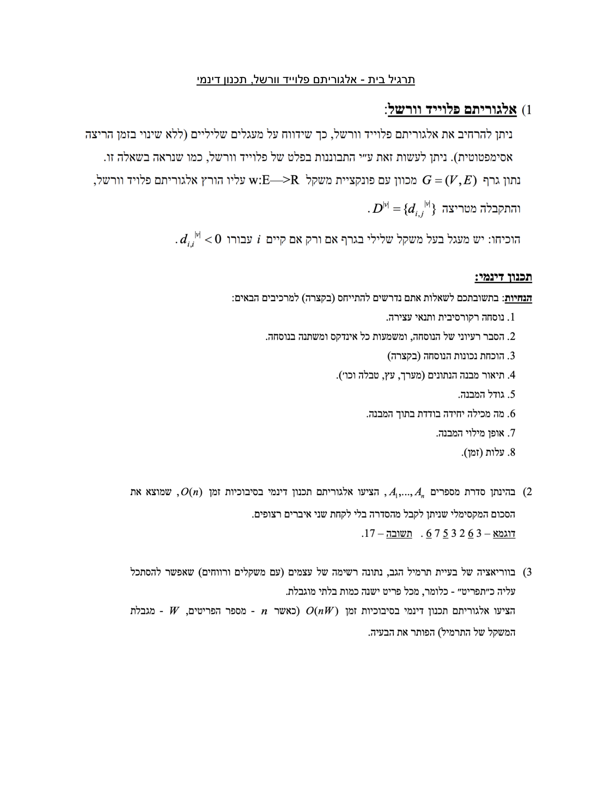
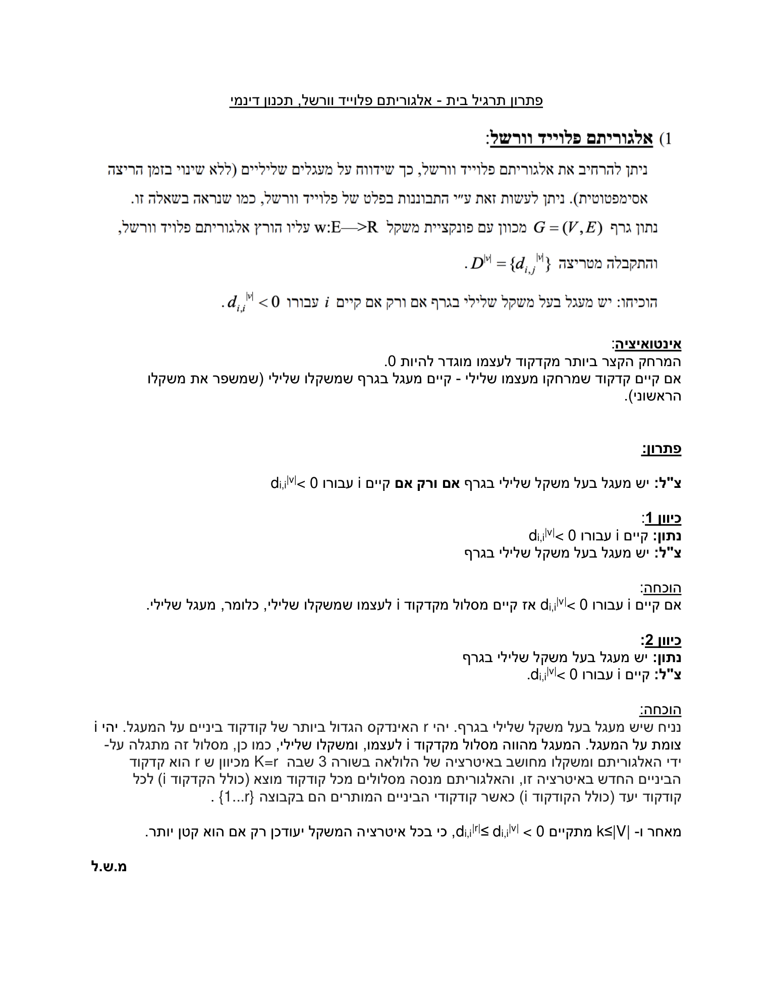
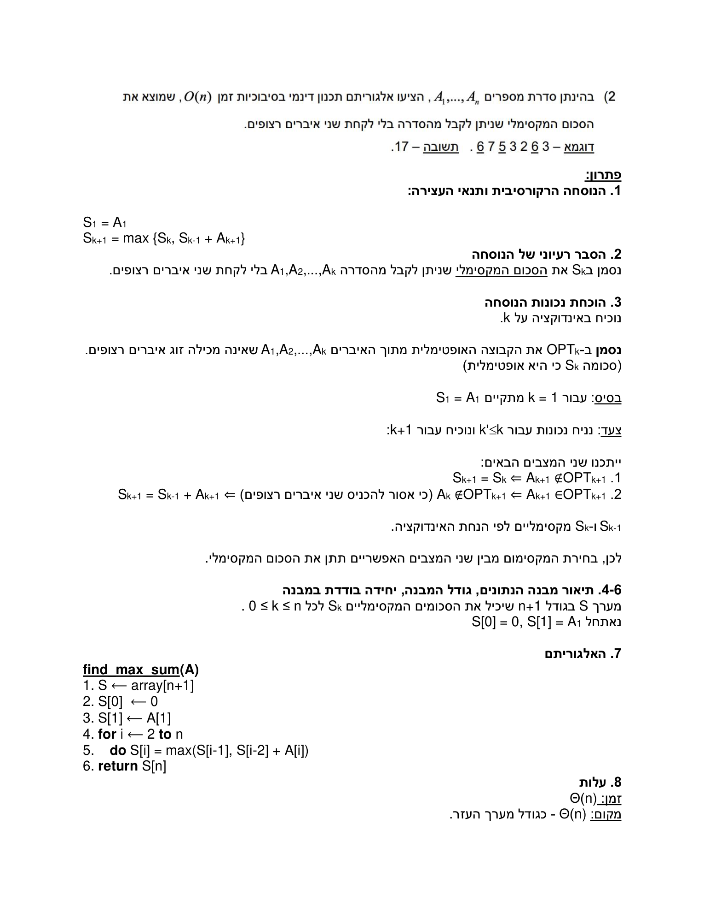
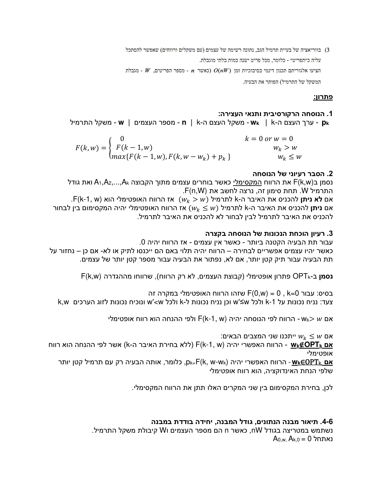
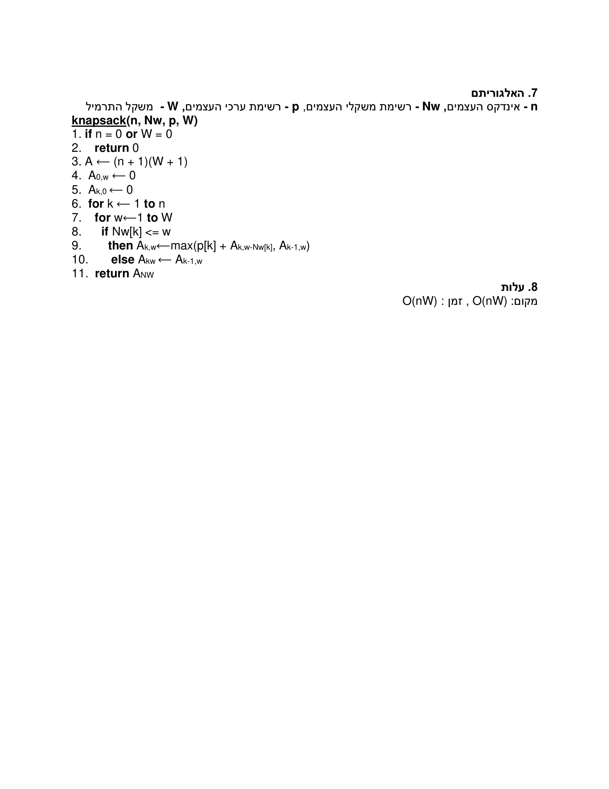
שאלה 1 — Floyd-Warshall ומעגלים שליליים
הוכיחו: יש מעגל שלילי בגרף אם"ם קיים i עבורו d_{i,i}^{|V|} < 0.
כיוון 1: d_{i,i}<0 ⇒ מסלול מ-i לעצמו במשקל שלילי = מעגל שלילי.
כיוון 2: אם יש מעגל שלילי דרך i, האלגוריתם מגלה אותו באיטרציה k=r (r = האינדקס הגדול ביותר על המעגל), ולכן d_{i,i}^{|V|} ≤ d_{i,i}^{r} < 0. מ.ש.ל.
הסבר מודרך: מרחק קדקוד מעצמו מוגדר 0; ערך שלילי חושף מעגל ששיפר את המרחק. Floyd-Warshall בוחן את כל קדקודי הביניים.
שאלה 2 — סכום מקסימלי ללא שני איברים רצופים
סדרה A₁…Aₙ. אלגוריתם DP ב-O(n) לסכום המקסימלי בלי שני איברים רצופים. דוגמה: 3 6 2 3 5 7 6 → 17.
נוסחה (מילה במילה מהמקור): S₁ = A₁; S_{k+1} = max{ Sₖ, S_{k-1} + A_{k+1} }.
find_max_sum(A) 2. S[0] ← 0; 3. S[1] ← A[1] 4. for i ← 2 to n 5. do S[i] = max(S[i-1], S[i-2] + A[i]) 6. return S[n]
עלות זמן ומקום Θ(n). הסבר: בכל שלב מחליטים אם לקחת את A_{k+1} (ואז אסור את Aₖ ⇒ S_{k-1}+A_{k+1}) או לא (Sₖ).
שאלה 3 — תרמיל גב עם כמות בלתי-מוגבלת
מכל פריט כמות בלתי-מוגבלת. אלגוריתם DP ב-O(nW).
F(k, w) = 0 k=0 or w=0
F(k-1, w) w_k > w
max{ F(k-1, w), F(k, w-w_k) + p_k } w_k ≤ w
המפתח: במקרה w_k ≤ w משתמשים ב-F(k, w-w_k) (אותה שורה k) — כי מותר לקחת את אותו פריט שוב. עלות זמן ומקום O(nW).
6.7 רשתות זרימה (Max-Flow / Min-Cut)
⬇️ hw-flow-networks.pdf · ⬇️ sol-hw-flow-networks.pdf
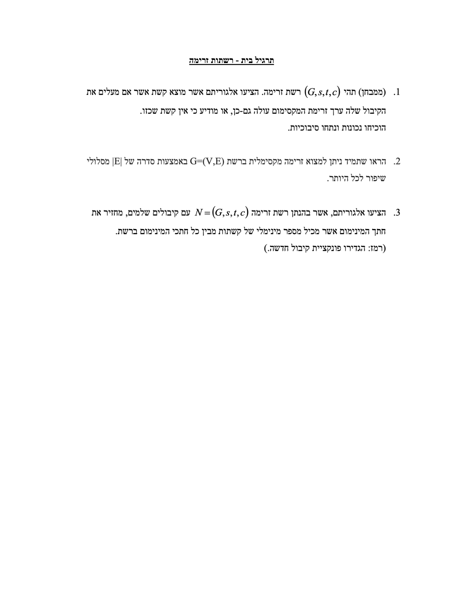
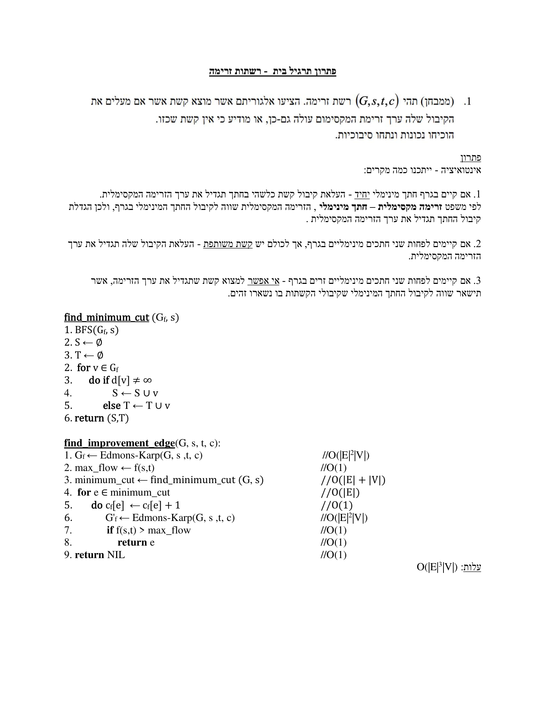
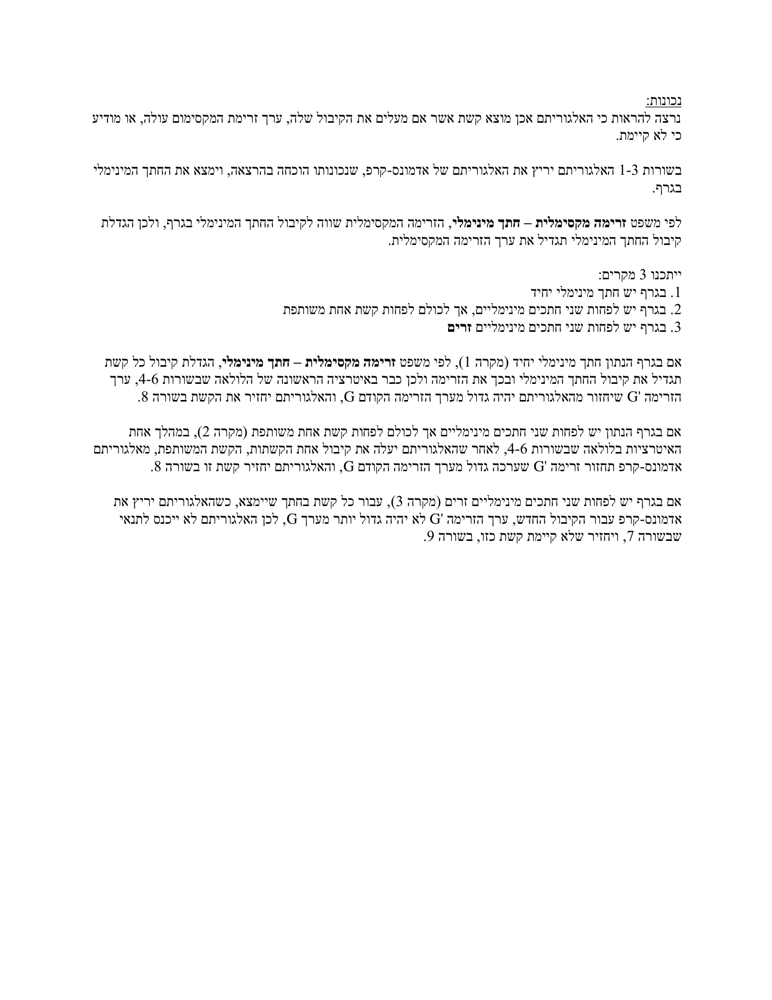
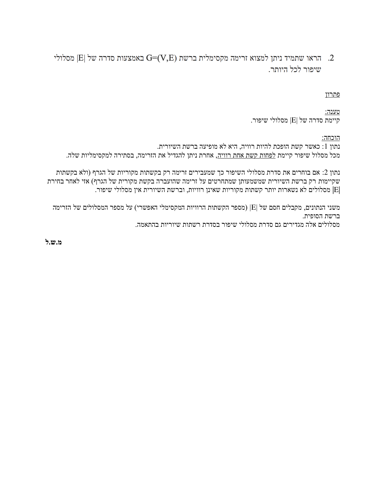
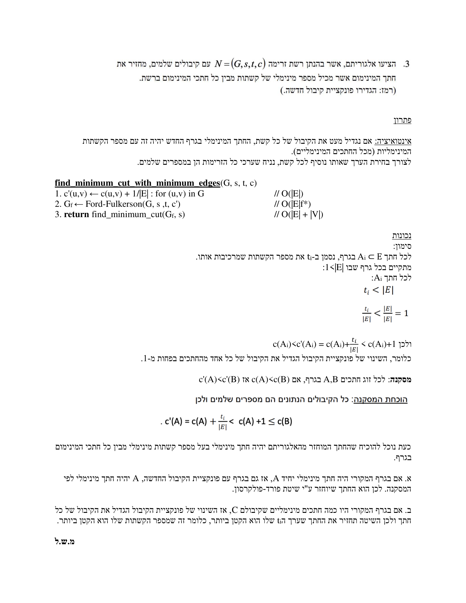
שאלה 1 (ממבחן!) — קשת שהגדלת קיבולה מגדילה זרימה
הציעו אלגוריתם המוצא קשת שהעלאת קיבולה מגדילה את זרימת המקסימום, או מודיע שאין. הוכיחו נכונות ונתחו סיבוכיות.
find_improvement_edge(G, s, t, c): 1. G_f ← Edmonds-Karp(G, s, t, c) //O(|E|²|V|) 3. minimum_cut ← find_minimum_cut(G, s) //O(|E|+|V|) 4. for e ∈ minimum_cut 5. do c_f[e] ← c_f[e] + 1 6. G'_f ← Edmonds-Karp(G, s, t, c) 7. if f(s,t) > max_flow: return e 9. return NIL
נכונות (מילה במילה, מקוצר): לפי max-flow=min-cut, קשת שמגדילה זרימה חייבת להיות בחתך המינימלי. שלושה מקרים: (1) חתך מינימלי יחיד; (2) כמה חתכים עם קשת משותפת; (3) חתכים זרים — אז אין קשת כזו. עלות O(|E|³·|V|).
מציאת חתך מינימלי: BFS ברשת השיורית — S = הנגישים מ-s, T = השאר.
שאלה 2 — |E| מסלולי שיפור מספיקים
הראו שתמיד ניתן למצוא זרימה מקסימלית בסדרה של |E| מסלולי שיפור לכל היותר.
הוכחה (מילה במילה, מקוצר): כל מסלול שיפור מכיל לפחות קשת אחת שהופכת רווּיה. אם בוחרים מסלולים שמעבירים זרימה רק בקשתות מקוריות, אחרי |E| מסלולים כל הקשתות המקוריות רוויות ואין יותר מסלולי שיפור. ⇒ חסם |E|.
שאלה 3 — חתך מינימלי עם מספר קשתות מינימלי
החזירו את חתך המינימום עם מספר מינימלי של קשתות מבין כל חתכי המינימום. רמז: פונקציית קיבול חדשה.
1. c'(u,v) ← c(u,v) + 1/|E| for (u,v) in G 2. G_f ← Ford-Fulkerson(G, s, t, c') 3. return find_minimum_cut(G_f, s)
נכונות (מילה במילה, מקוצר): חתך עם t_i קשתות מקבל תוספת t_i/|E| < 1. הקיבולים שלמים ⇒ הסדר בין חתכים בקיבול שונה נשמר, ובין חתכי מינימום שווים — נבחר זה עם מספר הקשתות הקטן ביותר.
תרגיל כיתה — הקצאת משימות ל-2 ליבות (חתך מינימלי)
סעיף א: s = ליבה A, t = ליבה B, קדקוד לכל משימה; c(s,i)=a_i, c(i,t)=b_i. כל חתך בקיבול k = השמה בעלות k ⇒ חתך מינימלי = השמה מיטבית.
סעיף ב: מוסיפים קשת c(i,j)=δ(i,j) לכל זוג משימות; קיבול החתך = ביצוע + תקשורת בין ליבות מנוגדות. עלות O(n²·f*).
6.8 התאמת מחרוזות (Rabin-Karp / KMP)
⬇️ hw-string-matching.pdf · ⬇️ sol-hw-string-matching.pdf
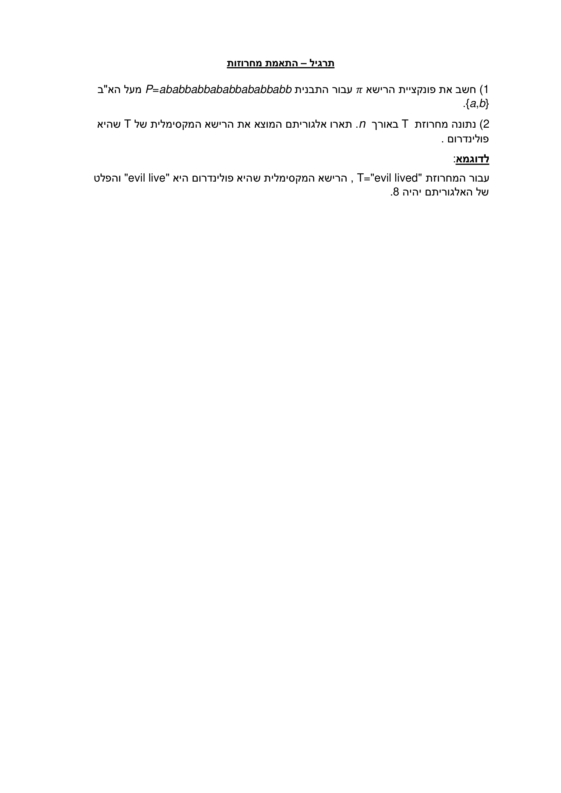

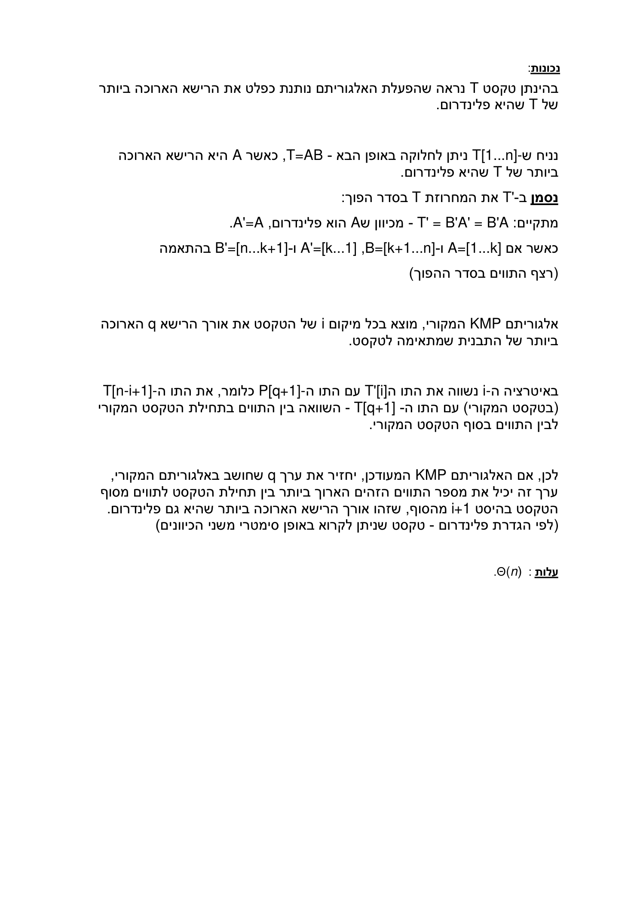
שאלה 1 — פונקציית הרישא π
חשב את π עבור P = ababbabbababbababbabb מעל {a,b}.
מיקום: 1 2 3 4 5 6 7 8 9 10 11 12 13 14 15 16 17 18 19 20 21 תו: a b a b b a b b a b a b b a b a b b a b b π: 0 0 1 2 0 1 2 0 1 2 3 4 5 6 7 3 4 5 6 7 8
הסבר מודרך: π(q) = אורך הרישא הארוכה ביותר של P[1..q] שהיא גם סיפא ממש. הקפיצות (למשל מ-7 ל-3 במיקום 16) הן ה"נפילות אחורה" של KMP.
שאלה 2 — רישא מקסימלית שהיא פלינדרום
מצא את הרישא המקסימלית של T שהיא פלינדרום. דוגמה: "evil lived" → 8.
Find-Longest-Palindrome(T) 1. T' ← reverse(T) Θ(n) 2. q ← KMP-Matcher-Updated(T', T) Θ(n) 3. return q
נכונות מודרכת: אם T=AB ו-A פלינדרום, אז ב-T'=reverse(T) מתקיים A'=A. KMP המעודכן מוצא את הרישא הארוכה של T התואמת לסופו — בדיוק אורך הפלינדרום. עלות Θ(n).
תרגילי כיתה (Rabin-Karp)
P1*P2: מריצים Rabin-Karp ל-P1 ול-P2; לכל shift1+m₁ ≤ shift2 מדפיסים S=shift1, L=shift2+m₂−shift1. עלות O(n²).
התאמה הופכית (א"ב בינארי): הופכים ספרות P (0↔1) ומריצים Rabin-Karp — התאמה של ההפוך = אי-התאמה מקורית.
סיבוב מעגלי: T' סיבוב של T אם"ם T' מופיעה ב-T·T (ובאותו אורך). מריצים Rabin-Karp על T·T.
6.9 התאמת מחרוזות בקונבולוציה
⬇️ hw-string-matching-convolution.pdf · ⬇️ sol-hw-string-matching-convolution.pdf
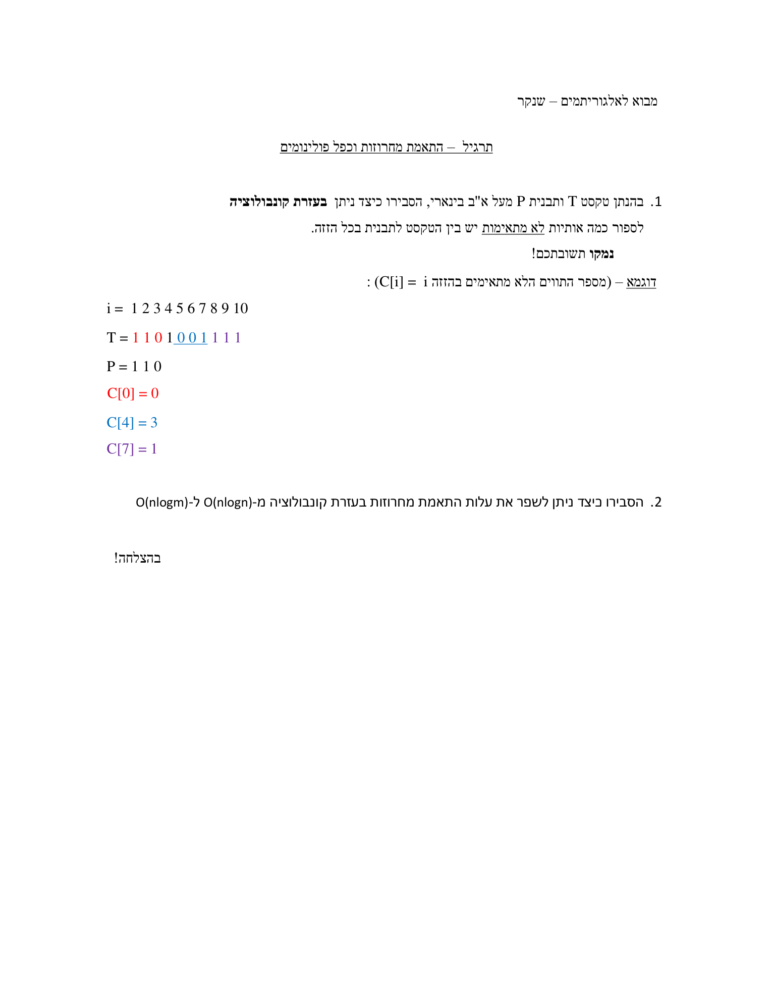
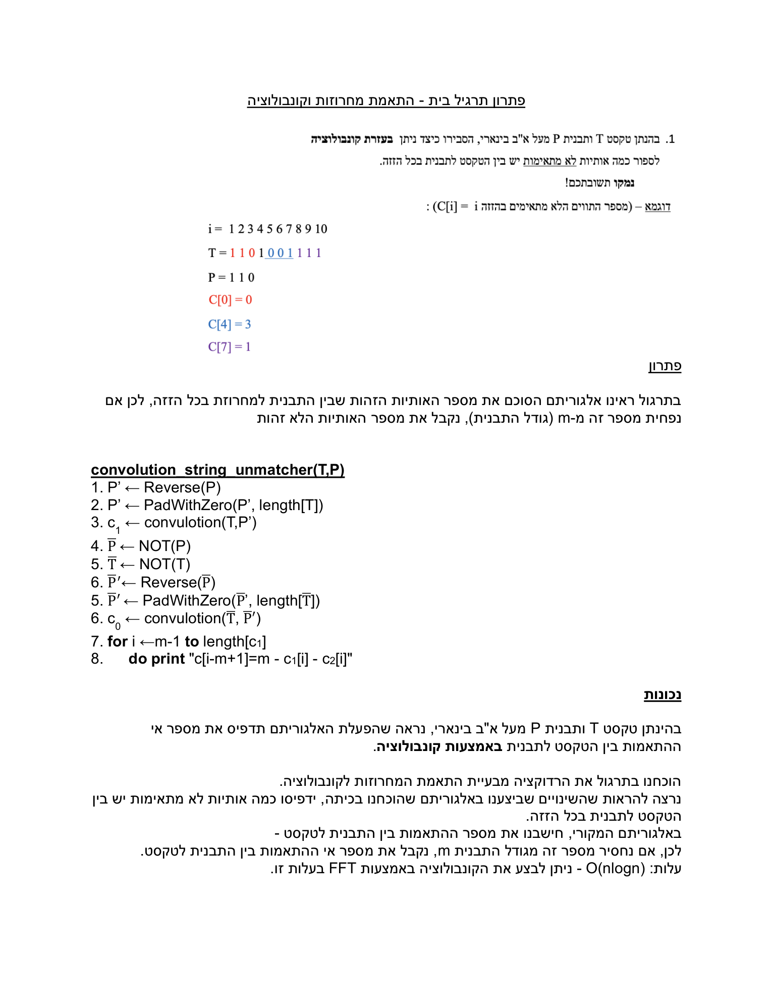
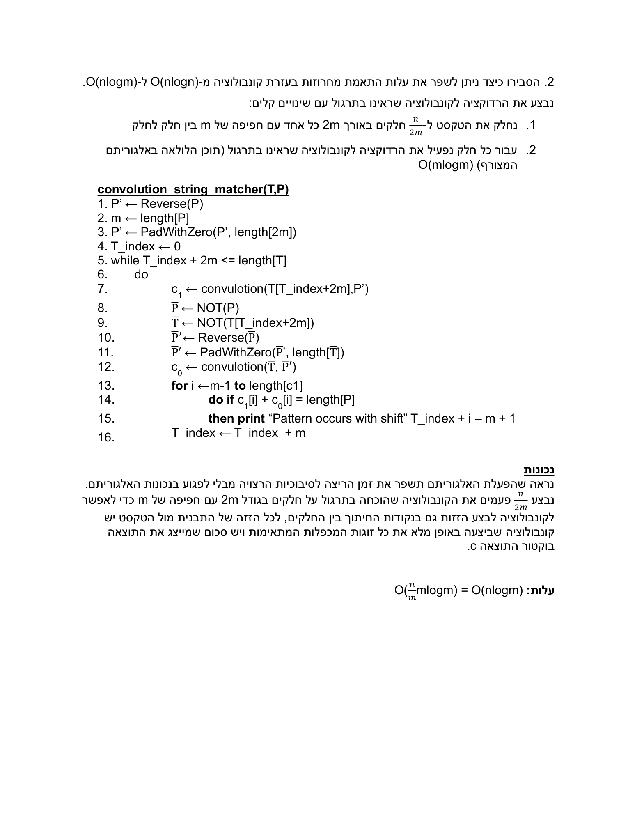
שאלה 1 — ספירת אי-התאמות בקונבולוציה
בטקסט T ותבנית P בינאריים, כיצד לספור אותיות לא-מתאימות בכל הזזה בעזרת קונבולוציה?
רעיון (מילה במילה מהמקור): ראינו אלגוריתם הסופר התאמות בכל הזזה; מחסירים אותו מ-m ⇒ אי-התאמות.
convolution_string_unmatcher(T,P) 1. P' ← Reverse(P); P' ← PadWithZero(P', |T|) 3. c₁ ← convolution(T, P') 4. P̄ ← NOT(P); T̄ ← NOT(T); P̄' ← Reverse(P̄); pad 6. c₀ ← convolution(T̄, P̄') 7. for i: print "c[i-m+1] = m - c₁[i] - c₀[i]"
עלות O(n log n) (קונבולוציה ב-FFT). מוסיפים ספירת "אחדות תואמות" (c₁) ו"אפסים תואמים" (c₀).
שאלה 2 — שיפור מ-O(n log n) ל-O(n log m)
רעיון (מילה במילה מהמקור): מחלקים את T ל-n/2m חלקים באורך 2m עם חפיפה של m, ומריצים את הרדוקציה על כל חלק (O(m log m)). סה"כ O(n/m · m log m) = O(n log m).
6.10 FFT ומכפלת פולינומים
⬇️ hw-fft.pdf · ⬇️ sol-hw-fft.pdf
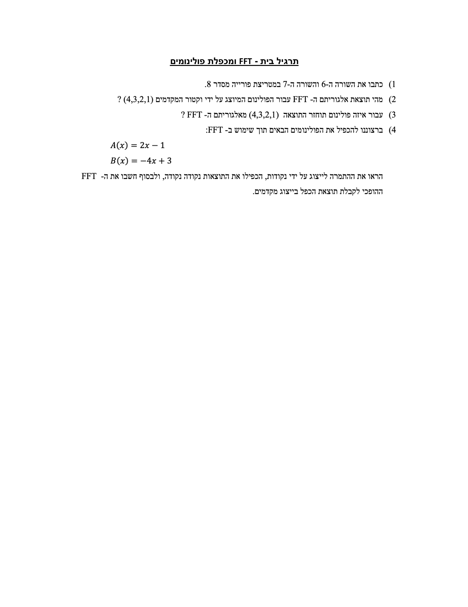
1) כתבו את השורה ה-6 וה-7 במטריצת פורייה מסדר 8. 2) תוצאת FFT עבור (4,3,2,1)? 3) עבור איזה פולינום תוחזר (4,3,2,1)? 4) הכפילו A(x)=2x−1, B(x)=−4x+3 ב-FFT (התמרה, כפל נקודתי, IFFT).
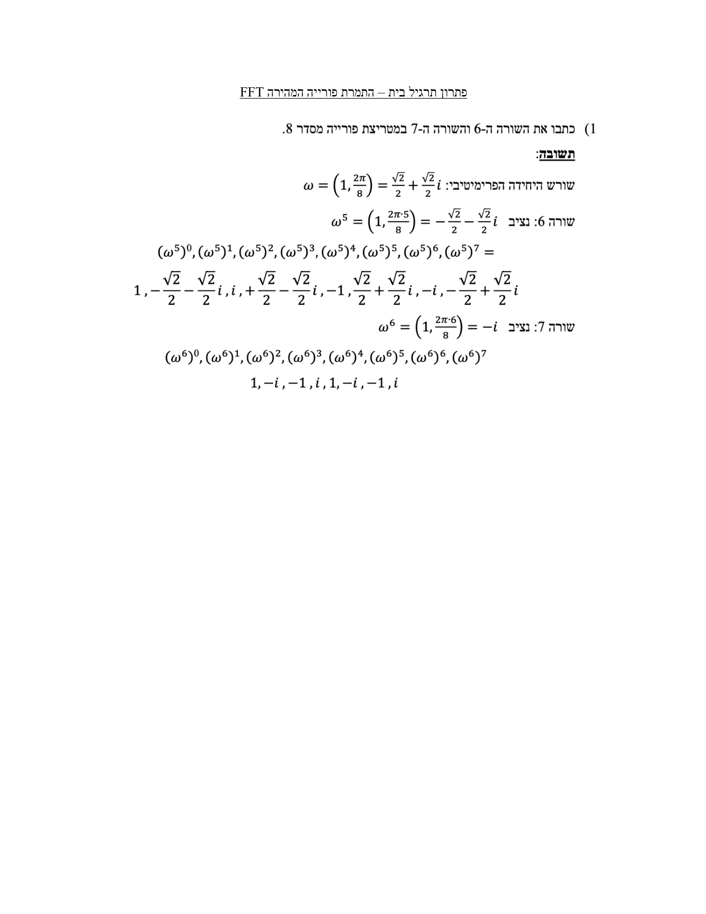
תמלול נאמן של הפתרון הרשמי (לפי הצילומים):
שאלה 1 — השורה ה-6 וה-7 במטריצת פורייה מסדר 8.
שורש היחידה הפרימיטיבי: ω = (1, 2π/8) = √2/2 + √2/2·i.
שורה 6: נציב ω5 = (1, 2π·5/8) = −√2/2 − √2/2·i, והחזקות (ω5)0…(ω5)7 הן:
1, −√2/2−√2/2 i, i, √2/2−√2/2 i, −1, √2/2+√2/2 i, −i, −√2/2+√2/2 i.
שורה 7: נציב ω6 = (1, 2π·6/8) = −i, והחזקות (ω6)0…(ω6)7 הן:
1, −i, −1, i, 1, −i, −1, i.
שאלה 2 — תוצאת FFT עבור וקטור המקדמים (4,3,2,1).
נריץ את האלגוריתם: a = (4,3,2,1), n = 4, ωn = i, ω = 1. פיצול: a[0] = (4,2), a[1] = (3,1).
קריאה רקורסיבית (n = 2, ωn = −1): עבור (4,2) → y0 = 4+1·2 = 6, y1 = 4−1·2 = 2 ⇒ y[0] = (6,2); עבור (3,1) → y0 = 3+1·1 = 4, y1 = 3−1·1 = 2 ⇒ y[1] = (4,2).
חזרה לקריאה הרקורסיבית הראשונה (n = 4, ωn = i): k=0: y0 = 6+4 = 10, y2 = 6−4 = 2; ω = i, k=1: y1 = 2+2i, y3 = 2−2i.
תשובה סופית: y = (10, 2+2i, 2, 2−2i).
שאלה 3 — עבור איזה פולינום תוחזר (4,3,2,1) מ-FFT.
צריך לחשב את התמרת פורייה ההפוכה של הווקטור. מאחר ובשאלה 2 כבר חישבנו עבורו את התמרת פורייה, כל שנותר הוא לחלק ב-4 ולסדר מחדש את רכיבי הווקטור. לכן התשובה היא:
(10, 2+2i, 2, 2−2i) ⇒ (2½, ½+½i, ½, ½−½i) ⇒ (2½, ½−½i, ½, ½+½i).
שאלה 4 — הכפלת A(x)=2x−1 ו-B(x)=−4x+3 באמצעות FFT.
כדי להכפיל שני פולינומים מדרגה n צריך להעביר אותם לדרגה 2n בעזרת ריפוד באפסים:
A(x) = 2x−1 = (−1, 2, 0, 0), ו-FFT(−1,2,0,0) נותן ya = (1, −1+2i, −3, −1−2i).
B(x) = −4x+3 = (3, −4, 0, 0), ו-FFT(3,−4,0,0) נותן yb = (−1, 3−4i, 7, 3+4i).
כפל רכיב-רכיב: (3−4i)(−1+2i) = −3+6i+4i+8 = 5+10i, (3+4i)(−1−2i) = −3−6i−4i+8 = 5−10i ⇒ המכפלה c = ya·yb = (−1, 5+10i, −21, 5−10i).
מחשבים FFT הופכי: FFT(−1, 5+10i, −21, 5−10i) נותן (−12, 0, −32, 40); מחלקים ב-n=4 ⇒ (−3, 0, −8, 10); משנים את הסדר (לכל 1≤i≤n−1 מחליפים את תוצאה i בתוצאה n−i) ⇒ (−3, 10, −8, 0).
לסיכום: A(x)·B(x) = −3 + 10x − 8x².
בדיקה: (2x−1)(−4x+3) = −8x²+6x+4x−3 = −3+10x−8x². ✓
מקור: sol-hw-fft.pdf (6 עמ'), התמרת פורייה המהירה FFT.
הסבר מודרך שלנו: ארבע השאלות ממחישות את מעגל החיים של כפל פולינומים ב-FFT.
- מטריצת פורייה (שאלה 1): שורה j היא החזקות (ωj)0…(ωj)7 של שורש היחידה מסדר 8. מחשבים את ω5 ו-ω6 בצורה קוטבית (1, 2π·k/8) וממירים לצורה קרטזית.
- FFT ישיר (שאלה 2): הפרד-ומשול — מפצלים לזוגי/אי-זוגי, פותרים רקורסיבית ומאחדים עם yk = y[0]k + ωk·y[1]k ו-yk+n/2 = y[0]k − ωk·y[1]k.
- IFFT (שאלה 3): אותו אלגוריתם עם ω−1, חלוקה ב-n וסידור מחדש של הרכיבים — מחזיר את המקדמים.
- כפל (שאלה 4): ריפוד ל-2n ⇒ FFT לשניהם ⇒ כפל נקודתי ⇒ IFFT. הבדיקה האלגברית מאשרת −3+10x−8x².
סכום קרטזי: מייצגים A,B כפולינומים עם a_i=1 אם i∈A; מקדמי C(x)=A(x)·B(x) נותנים את הסכום הקרטזי וכמות הפעמים שכל ערך מתקבל. עלות O(n log n).
מטריצות טופליץ: סכום = טופליץ (כן); מכפלה = לא בהכרח; ייצוג בווקטור באורך 2n-1 ⇒ חיבור O(n); כפל טופליץ-בוקטור ב-FFT O(n log n); כפל שתי טופליץ = n כפלי-עמודה ⇒ O(n² log n).
6.11 אלגוריתמים אקראיים — תרגיל בית 12
⬇️ hw-12-2023.pdf · ⬇️ sol-hw-12-2023.pdf

שאלה 1. באלגוריתם Freivalds, אם הביט הראשון של הווקטור נקבע ל-0 (במקום אקראי) — תארו והוכיחו תנאי על A,B,C שבו הסתברות ההצלחה במקרה C≠A·B לא תשתנה.
שאלה 2 (ממבחן). אלגוריתם מונטה-קרלו A עם תוחלת זמן T(n) ונכונות בהסתברות p(n); בדיקה ב-t(n). הראו כיצד לקבל לאס-וגאס בתוחלת (T(n)+t(n))/p(n).


תמלול נאמן של הפתרון הרשמי (לפי הצילומים):
שאלה 1 — קביעת הביט הראשון של הווקטור האקראי ל-0 באלגוריתם Freivalds.
במקרה שבקלט אכן מתקיים C=A*B, האלגוריתם תמיד יענה תשובה נכונה. במקרה C≠A*B, כלומר כאשר D=A*B−C אינה מטריצת האפס, כדי שהסתברות ההצלחה לא תשתנה צריך לדאוג שההסתברות לבחור "וקטור שקרן" לא תשתנה (תישאר ½).
נסתכל על וקטור המכפלה C(v): ∀1≤i≤n, [C·v]i = Σk=1n cikvk. מאחר ונקבע v1 = 0, ניתן להשמיט מהסכום את האיבר הראשון (כי הוא 0), כלומר: ∀1≤i≤n, [C·v]i = Σk=2n cikvk. וכך אין משמעות לאיבר ci1 — הוא לא ישפיע על סכום המכפלות (מוכפל ב-0). בהכללה, כל איברי העמודה הראשונה של C לא ישפיעו על המכפלה C(v).
באופן דומה, נסתכל על וקטור המכפלה A(B(v)): ∀1≤i≤n, [A·B·v]i = Σk=1n [AB]ikvk = Σk=2n [AB]ikvk — מאותם שיקולים, גם איברי העמודה הראשונה של AB לא ישפיעו על המכפלה AB(v).
מסקנה: התנאי לכך שקביעת הביט הראשון של הווקטור האקראי ל-0 לא תשנה את הסתברות ההצלחה של האלגוריתם הוא שכל איברי העמודה הראשונה של C יהיו שווים לאיברי העמודה הראשונה של AB.
הערה: הגבלה זו אינה פוגעת באלגוריתם — ניתן לבדוק במפורש שאכן יש שוויון בין העמודה הראשונה של C לעמודה הראשונה של AB (ע"י הכפלת המטריצה A בעמודה הראשונה של מטריצה B). בדיקה זו תעלה Θ(n²) ולכן לא תפגע בסיבוכיות האלגוריתם.
ניתוח הסתברותי: נוכיח שההסתברות P לכישלון (לטעות) לא תשתנה (תישאר ½). באלגוריתם הרגיל מספר הווקטורים הכללי באורך n הוא 2n, ומספר הווקטורים השקרנים שניתן לבחור הוא 2n−1 (הוכח בשיעור). אם הביט הראשון נקבע להיות 0 באופן קבוע, דרגת החופש יורדת: מספר הווקטורים הכללי באורך n יורד ל-2n−1 (נשארו רק n−1 ביטים לבחור), ומספר הווקטורים השקרנים שניתן לבחור הוא 2n−2 (הביט הראשון נקבע כ-0, וביט נוסף נקבע לפי האחרים כדי לוודא שהווקטור אכן יהיה שקרן). נקבל: p(כישלון) = 2n−2/2n−1 = ½, כנדרש.
שאלה 2 (ממבחן) — המרת אלגוריתם מונטה-קרלו לאלגוריתם לאס-וגאס.
נריץ את אלגוריתם A על הבעיה P שוב ושוב (זמן T(n) לכל הרצה). אחרי כל הרצה נבדוק את נכונות התשובה בזמן t(n). אם התברר שהתשובה נכונה — נחזיר אותה, אחרת נריץ שוב.
ניתוח סיבוכיות: תוחלת זמן הריצה לכל הרצה היא T(n)+t(n). יש לנו כאן ניסוי ברנולי (מנסים שוב ושוב עד להצלחה), ולכן תוחלת מספר הפעמים עד שנקבל הצלחה היא משתנה גאומטרי השווה 1/p(הצלחה) = 1/p(n). לכן בסה"כ תוחלת זמן הריצה: (T(n)+t(n))/p(n), כנדרש.
מקור: sol-hw-12-2023.pdf (3 עמ'), פתרון תרגיל בית 12.
שאלה 1 (אינטואיציה): קיבוע v1 = 0 "מוחק" את העמודה הראשונה מכל מכפלה. לכן ה-½ נשמר בדיוק כאשר העמודה הראשונה של C כבר זהה לזו של AB — אחרת מאבדים חצי מכוח הזיהוי (מספר הווקטורים השקרנים ומספר האפשרויות מצטמצמים שניהם בגורם 2, ולכן היחס נשאר ½).
שאלה 2 (המרה Monte Carlo → Las Vegas): מריצים את A, בודקים את התוצאה ב-t(n); אם נכונה — מחזירים, אחרת חוזרים. מספר הניסיונות עד הצלחה הוא משתנה גאומטרי עם הסתברות p(n) ⇒ תוחלת 1/p(n) ניסיונות, כל אחד T(n)+t(n) ⇒ תוחלת כוללת (T(n)+t(n))/p(n).
מקור מאגר התרגילים: כל קבצי hw-*.pdf / sol-*.pdf ותרגילי הכיתה מקבצי lec-*.pdf.
7. בדיקה עצמית — שאלות בסגנון מבחן
בשאלה 1 במבחן לדוגמה יש רק k קשתות שליליות (ללא מעגלים שליליים). איזו סיבוכיות אופיינית לפתרון היעיל שמנצל את k הקטן?
שאלה 2 במבחן טוענת "קשת בטוחה ⇐ קשת קלה". מדוע הטענה אינה מובטחת?
בשאלה 3 (רשת זרימה), קשת שהעלאת קיבולה תגדיל את זרימת המקסימום חייבת להיות:
באלגוריתם Freivalds (אימות AB=C), אם AB≠C, מהי הסתברות השגיאה בהרצה בודדת?
ב-create_fair_coin (מטבע מוטה בהסתברות P), מהי תוחלת מספר הטלות המטבע המקורי לקבלת הטלה הוגנת אחת?
אלגוריתם רץ מספר קבוע x של פעמים (זמן חסום O(x·n²)) ועלול להחזיר תשובה שגויה בהסתברות קטנה. לאיזו משפחה הוא שייך?
מקור: example-exam-2024.pdf; tirgul-13-exam-review-2023.pdf; sol-hw-flow-networks.pdf